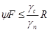
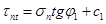
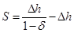
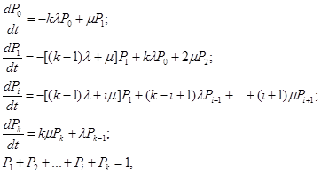
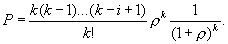
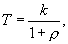
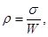
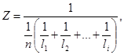

Система нормативных документов в строительстве
СТРОИТЕЛЬНЫЕ
НОРМЫ И ПРАВИЛА
РОССИЙСКОЙ ФЕДЕРАЦИИ
ИНЖЕНЕРНАЯ
ЗАЩИТА ТЕРРИТОРИЙ,
ЗДАНИЙ И СООРУЖЕНИЙ ОТ ОПАСНЫХ
ГЕОЛОГИЧЕСКИХ ПРОЦЕССОВ.
ОСНОВНЫЕ ПОЛОЖЕНИЯ
СНиП 22-02-2003
ФЕДЕРАЛЬНОЕ
АГЕНТСТВО
ПО СТРОИТЕЛЬСТВУ И ЖИЛИЩНО-КОММУНАЛЬНОМУ ХОЗЯЙСТВУ
(РОССТРОЙ)
Москва 2004
ПРЕДИСЛОВИЕ
1. РАЗРАБОТАНЫ Федеральным государственным унитарным предприятием «Производственный и научно-исследовательский институт по инженерным изысканиям в строительстве» (ФГУП «ПНИИИС») Госстроя России при участии ФГУП «Фундаментпроект»; ОАО «ЦНИИС»; АО «Институт Гидропроект»; ГП «Противокарстовая и береговая защита»; ФГУП «СоюзДорНИИ»; ФГУП «НИИВОДГЕО»; ВИНИТИ РАН; МГСУ Министерства образования РФ
ВНЕСЕНЫ Управлением технического нормирования, стандартизации и сертификации в строительстве и ЖКХ Госстроя России
2. ПРИНЯТЫ И ВВЕДЕНЫ В ДЕЙСТВИЕ постановлением Госстроя России от 30 июня 2003 г. № 125
3. ВЗАМЕН СНиП 2.01.15-90
СОДЕРЖАНИЕ
Настоящие строительные нормы и правила Российской Федерации разработаны в Системе нормативных документов в строительстве и содержат основные требования, предъявляемые к сооружениям и мероприятиям инженерной защиты территорий, зданий и сооружений от опасных геологических процессов (оползней, обвалов, карста, селевых потоков, снежных лавин, переработки берегов морей, водохранилищ, озер и рек, подтопления, затопления, морозного пучения, наледеобразования, термокарста) и их сочетаний.
В разработке настоящего документа принимали участие: д-р геол.-минер. наук В.В. Баулин - руководитель темы; канд.техн. наук С.В. Тимофеев - отв. исп. темы; канд. техн. наук Т.А. Ларина, д-р геол.-минер. наук И.О. Тихвинский, д-р техн. наук Е.С. Дзекцер, И.А. Саваренский, канд. геол.-минер. наук И.П. Хоменко, д-р геогр. наук М.М. Корейша, канд. геол.-минер. наук В.П. Чернядьев, П.И. Тимашев, д-р техн. наук М.В. Болгов (ФГУП «ПНИИИС»); д-р геол.-минер. наук М.А. Минкин (ФГУП «Фундаментпроект»); д-р техн. наук Г.С. Переселенков (ОАО «ЦНИИС»); Н.Н. Кондратьев, A.Г. Степаненко (АО «Институт Гидропроект»); канд. техн. наук В.В. Толмачев (ГП «Противокарстовая и береговая защита» (г. Дзержинск)); д-р техн. наук В.В. Казарновский, Ю.М. Львович (ФГУП «СоюзДорНИИ»); д-р техн. наук Н.П. Куранов, канд. техн. наук А.П. Шевчик (ФГУП «НИИВОДГЕО»); д-р техн. наук К.С. Лосев (ВИНИТИ РАН); канд. геол.-минер. наук И.В. Дудлер (МГСУ Министерства образования РФ).
СТРОИТЕЛЬНЫЕ НОРМЫ И ПРАВИЛА РОССИЙСКОЙ ФЕДЕРАЦИИ
ИНЖЕНЕРНАЯ
ЗАЩИТА ТЕРРИТОРИЙ, ЗДАНИЙ
И СООРУЖЕНИЙ ОТ ОПАСНЫХ ГЕОЛОГИЧЕСКИХ ПРОЦЕССОВ.
ОСНОВНЫЕ ПОЛОЖЕНИЯ
Engineering
protection of territories, buildings and structures
from dangerous geological processes. Basic principles
Дата введения 2004-01-01
Настоящие строительные нормы и правила распространяются на сооружения и мероприятия инженерной защиты территорий, зданий и сооружений от опасных геологических процессов (оползней, обвалов, карста, селевых потоков, снежных лавин, переработки берегов морей, водохранилищ, озер и рек, от подтопления и затопления территорий, морозного пучения, наледеобразования, термокарста) и их сочетаний (далее - инженерная защита).
При осуществлении инженерной защиты необходимо руководствоваться соответствующими законодательными и нормативными актами Российской Федерации и субъектов Российской Федерации.
При проектировании инженерной защиты в сейсмических районах, в районах развития других опасных процессов и грунтов с особыми свойствами (просадочных, набухающих и др.), а также на подрабатываемых территориях необходимо учитывать дополнительные требования соответствующих строительных норм и правил.
Примечание - Для проектирования инженерной защиты в развитие настоящих норм и правил следует разрабатывать своды правил или специальные технические условия.
В настоящих нормах и правилах использованы ссылки на следующие документы:
СНиП 2.01.07-85* Нагрузки и воздействия
СНиП 2.02.01-83* Основания зданий и сооружений
СНиП 2.02.04-88 Основания и фундаменты на вечномерзлых грунтах
СНиП 2.04.03-85 Канализация. Наружные сети и сооружения
СНиП 2.06.05-84* Плотины из грунтовых материалов
СНиП 2.06.15-85 Инженерная защита территорий от затопления и подтопления
СНиП 11-02-96 Инженерные изыскания для строительства. Основные положения
СНиП 33-01-2003 Гидротехнические сооружения. Основные положения
СП 11-102-97 Инженерно-экологические изыскания для строительства
СП 11-103-97 Инженерно-гидрометеорологические изыскания для строительства
СП 11-104-97 Инженерно-геодезические изыскания для строительства
СП 11-105-97 Инженерно-геологические изыскания для строительства (части I-VI)
СП 32-103-97 Проектирование морских берегозащитных сооружений
СП 33-101-2003 Определение основных расчетных гидрологических характеристик
ГОСТ 17.5.3.04-83 Охрана природы. Земля. Общие требования к рекультивации земель
ГОСТ 17.5.3.05-84 Охрана природы. Рекультивация земель. Общие требования к землеванию
ГОСТ 25100-95 Грунты. Классификация
ГОСТ 27217-87 Грунты. Метод полевого определения удельных касательных сил морозного пучения
ГОСТ 28622-90 Грунты. Метод лабораторного определения степени пучинистости
В настоящих нормах и правилах используются термины и определения, приведенные в приложении А.
4.1 Необходимость инженерной защиты определяется в соответствии с положениями Градостроительного кодекса Российской Федерации в части градостроительного планирования развития территории субъектов Российской Федерации, городов и сельских поселений:
для вновь застраиваемых и реконструируемых территорий - в проекте генерального плана с учетом вариантности планировочных и технических решений;
для застроенных территорий - в проектах строительства, реконструкции и капитального ремонта зданий и сооружений с учетом существующих планировочных решений и требований заказчика.
4.2 Проектирование инженерной защиты следует выполнять на основе:
результатов инженерно-геодезических, инженерно-геологических, инженерно-гидрологических, инженерно-гидрометеорологических и инженерно-экологических изысканий для строительства;
планировочных решений и вариантной проработки решений, принятых в схемах (проектах) инженерной защиты;
данных, характеризующих особенности использования территорий, зданий и сооружений как существующих, так и проектируемых, с прогнозом изменения этих особенностей и с учетом установленного режима природопользования (заповедники, сельскохозяйственные земли и т.п.) и санитарно-гигиенических норм;
результатов мониторинга объектов градостроительной деятельности;
обоснования инвестиций и технико-экономического сравнения возможных вариантов проектных решений инженерной защиты (при ее одинаковых функциональных свойствах) с оценкой предотвращенного ущерба.
При проектировании инженерной защиты следует учитывать ее градо- и объектоформирующее значение, местные условия, а также имеющийся опыт проектирования, строительства и эксплуатации сооружений инженерной защиты в аналогичных природных условиях.
4.3 Исходные материалы для проектирования схем инженерной защиты (приложение Б), сооружений и (или) мероприятий инженерной защиты должны включать:
сведения о географическом положении, хозяйственных связях и границах защищаемой территории;
оценку существующего хозяйственного использования территории, ее экологического значения и перспектив их развития;
сведения о существующих сооружениях и мероприятиях инженерной защиты, их состоянии, возможности реконструкции и службах их эксплуатации;
данные по ущербу от воздействия опасных геологических процессов;
материалы региональных геологических исследований и инженерных изысканий (инженерно-геологических, инженерно-гидрогеологических, инженерно-гидрометеорологических, инженерно-экологических);
материалы о проводимых или намечаемых региональных мероприятиях по инженерной подготовке территории и их влиянии на природные условия и ресурсы защищаемой территории;
данные о местных строительных материалах и энергетических ресурсах;
картографические материалы;
градостроительную документацию.
4.4 Инженерные изыскания для проектирования инженерной защиты следует проводить по заданию проектной организации в соответствии с требованиями СНиП 11-02, СП 11-102, СП 11-103, СП 11-104, СП 11-105 и государственных стандартов по инженерным изысканиям и исследованиям грунтов для строительства. Состав, содержание и детальность материалов инженерных изысканий определяют соответствующим масштабом необходимых графических материалов (приложение Б).
Инженерные изыскания должны быть основаны на обобщении информации, охватывающей все виды изыскательских работ, выполненных на территории.
Результаты изысканий должны содержать прогноз изменения инженерно-геологических, гидрологических и экологических условий на расчетный срок с учетом природных и техногенных факторов, а также территориальную оценку (районирование) территории по порогам геологической безопасности и рекомендации по выбору принципиальных направлений инженерной защиты.
4.5 Если из-за сложности инженерно-геологических, гидрологических и экологических условий по материалам изысканий не представляется возможным выполнить необходимые расчеты и выбрать сооружения и (или) мероприятия, в проекте следует предусматривать экспериментальные сооружения и мероприятия инженерной защиты и (или) выполнение опытно-производственных работ с последующей корректировкой проекта.
4.6 При проектировании инженерной защиты следует обеспечивать (предусматривать):
предотвращение, устранение или снижение до допустимого уровня отрицательного воздействия на защищаемые территории, здания и сооружения действующих и связанных с ними возможных опасных процессов;
наиболее полное использование местных строительных материалов и природных ресурсов;
производство работ способами, не приводящими к появлению новых и (или) интенсификации действующих геологических процессов;
сохранение заповедных зон, ландшафтов, исторических объектов и памятников и т.д.;
надлежащее архитектурное оформление сооружений инженерной защиты;
сочетание с мероприятиями по охране окружающей среды;
в необходимых случаях - систематические наблюдения за состоянием защищаемых территорий и объектов и за работой сооружений инженерной защиты в период строительства и эксплуатации (мониторинг).
4.7 При проектировании инженерной защиты следует предусматривать:
поэтапность возведения и ввода в эксплуатацию сооружений при строгом соблюдении технологической последовательности выполнения работ;
конструктивные решения и мероприятия, обеспечивающие возможность ремонта проектируемых сооружений, а также изменение их функционального назначения в процессе эксплуатации;
использование и, при необходимости, реконструкцию существующих сооружений инженерной защиты.
4.8 Мероприятия по инженерной защите и охране окружающей среды следует проектировать комплексно, с учетом прогноза ее изменения в связи с постройкой сооружений инженерной защиты и освоением территории. При этом мероприятия инженерной защиты от разных видов опасных процессов должны быть увязаны между собой.
4.9 В составе проекта инженерной защиты следует, при необходимости, предусматривать организационно-технические мероприятия, в том числе по предупреждению чрезвычайных ситуаций, предотвращающие гибель людей, исключающие возникновение аварийной ситуации или ослабляющие ее действие и снижающие возможный ущерб.
4.10 Инженерную защиту застроенных или застраиваемых территорий от одного или нескольких опасных геологических процессов следует осуществлять независимо от формы собственности и принадлежности защищаемых территорий и объектов, при необходимости предусматривать образование единой территориальной системы (комплекса) мероприятий и сооружений.
Выбор мероприятий и сооружений следует производить с учетом видов возможных деформаций и воздействий, уровня ответственности и стоимости защищаемых территорий, зданий и сооружений, их конструктивных и эксплуатационных особенностей.
4.11 Границы защищаемых территорий, подверженных воздействию опасных геологических процессов, в пределах которых требуются строительство сооружений и осуществление мероприятий инженерной защиты, следует устанавливать по материалам рекогносцировочных обследований и уточнять при последующих инженерных изысканиях.
4.12 Строительство сооружений и осуществление мероприятий инженерной защиты не должны приводить к активизации опасных процессов на примыкающих территориях.
В случае когда сооружения и мероприятия инженерной защиты могут оказать отрицательное влияние на эти территории (заболачивание, разрушение берегов, образование и активизация оползней и др.), в проекте должны быть предусмотрены соответствующие компенсационно-восстановительные мероприятия.
4.13 Рекультивацию и благоустройство территорий, нарушенных при создании сооружений и осуществлении мероприятий инженерной защиты, следует разрабатывать с учетом требований ГОСТ 17.5.3.04 и ГОСТ 17.5.3.05.
4.14 В необходимых случаях в проекте следует предусматривать установку контрольно-измерительной аппаратуры и устройство наблюдательных скважин, постов, геодезических реперов, марок и т.д. для наблюдения в период строительства и эксплуатации за развитием опасных процессов и работой сооружений инженерной защиты. В проекте должны быть предусмотрены состав и режим необходимых наблюдений (мониторинг) и соответствующие дополнительные мероприятия по обеспечению надежности сооружений и эффективности инженерной защиты.
Мониторинг должен проводиться специализированными организациями с целью своевременного выявления активизации опасных геологических процессов и принятия необходимых мер по защите зданий и сооружений и обеспечению безопасности людей.
4.15 Работы по освоению вновь застраиваемых и реконструируемых территорий следует начинать только после выполнения первоочередных мероприятий по их защите от опасных процессов.
Ввод в эксплуатацию сооружений и мероприятий инженерной защиты и строительство защищаемых объектов должны быть взаимоувязаны и гарантировать безаварийное ведение работ, а также функциональное использование сооружений инженерной защиты в экстремальных условиях.
4.16 Уровень ответственности (класс) сооружений инженерной защиты следует назначать в соответствии с уровнем ответственности или классом защищаемых объектов. При защите территории, на которой расположены объекты различных уровней ответственности или классов, уровень ответственности сооружений инженерной защиты должен, как правило, соответствовать уровню ответственности большинства защищаемых объектов. При этом отдельные объекты с повышенным уровнем ответственности могут иметь локальную защиту.
4.17 Нагрузки и воздействия, учитываемые в расчетах сооружений инженерной защиты, коэффициенты надежности, а также возможные сочетания нагрузок следует принимать в соответствии со СНиП 2.01.07 с учетом требований соответствующих разделов настоящих норм и правил.
Для сооружений инженерной защиты водоподпорного типа следует также учитывать требования СНиП 33-01.
4.18 Техническая эффективность и надежность сооружений и мероприятий инженерной защиты должны подтверждаться расчетами, а в обоснованных случаях - моделированием (натурным, физическим, математическим и др.) опасных процессов с учетом воздействия на них проектируемых сооружений и мероприятий.
4.19 Экономический эффект варианта инженерной защиты определяют размером предотвращенного ущерба территории или сооружению от воздействия опасных процессов за вычетом затрат на осуществление защиты.
Под предотвращенным ущербом следует понимать разность между ущербом при отказе от проведения инженерной защиты и ущербом, возможным после ее проведения. Оценка ущерба должна быть комплексной, с учетом всех его видов как в сфере материального производства, так и в непроизводственной сфере (в том числе следует учитывать ущерб воде, почве, флоре и фауне и т.п.).
Основные положения по оценке предотвращенного ущерба приведены в приложении В.
4.20 Зарегистрированные проявления наиболее вероятных опасных процессов на территориях субъектов Российской Федерации приведены в приложении Г.
5.1 К оползнеопасным относятся территории, на которых возможно возникновение оползневых смещений в течение периода строительства и эксплуатации объекта. В пределах оползнеопасных территорий отдельно выделяют оползневые зоны, где имеются или ранее возникали активные оползни.
5.2 Границы оползнеопасных территорий устанавливают по данным комплексных инженерных изысканий с использованием расчета устойчивости склонов и материалов сравнительного инженерно-геологического анализа применительно к особенностям рельефа, геологического строения, гидрогеологических и сейсмических условий, характера растительного покрова и климата.
5.3 При проектировании инженерной защиты от оползневых и обвальных процессов следует рассматривать целесообразность применения следующих мероприятий и сооружений, направленных на предотвращение и стабилизацию этих процессов:
изменение рельефа склона в целях повышения его устойчивости;
регулирование стока поверхностных вод с помощью вертикальной планировки территории и устройства системы поверхностного водоотвода;
предотвращение инфильтрации воды в грунт и эрозионных процессов;
искусственное понижение уровня подземных вод;
агролесомелиорация;
закрепление грунтов (в том числе армированием);
устройство удерживающих сооружений;
прочие мероприятия (регулирование тепловых процессов с помощью теплозащитных устройств и покрытий, защита от вредного влияния процессов промерзания и оттаивания, установление охранных зон и т.д.).
5.4 Если применение мероприятий и сооружений активной защиты, указанных в 5.3, полностью не исключает возможность образования оползней и обвалов, а также в случае технической невозможности или нецелесообразности активной защиты следует предусматривать мероприятия пассивной защиты (приспособление защищаемых сооружений к обтеканию их оползнем, улавливающие сооружения и устройства, противообвальные галереи и др.).
5.5 При проектировании противооползневых и противообвальных сооружений и мероприятий на берегах водоемов и водотоков необходимо дополнительно соблюдать требования раздела 9.
5.6 При выборе защитных мероприятий и сооружений и их комплексов следует учитывать виды возможных деформаций склона (откоса), уровень ответственности защищаемых объектов, их конструктивные и эксплуатационные особенности.
5.7 Виды противооползневых и противообвальных сооружений и мероприятий следует выбирать на основании расчетов общей и местной устойчивости склонов (откосов), т.е. устойчивости склона (откоса) в целом и отдельных его морфологических элементов.
5.8 Расчет устойчивости склонов (откосов) следует выполнять исходя из условия

где ψ - коэффициент сочетания нагрузок (для основного сочетания ψ = 1, для особого - 0,9, для нагрузок строительного периода - 0,95);
F - расчетное значение обобщенного сдвигающего воздействия на призму обрушения, определяемое с учетом коэффициентов надежности по нагрузке;
γс - коэффициент условий работы, учитывающий вид предельного состояния, степень точности исходных данных, приближенность расчетных схем, тип сооружения, конструкции или основания, вид материала и другие факторы;
γn - коэффициент надежности по назначению сооружения, принимаемый равным от 1,2 до 1,1 в зависимости от уровня ответственности проектируемой инженерной защиты;
R - расчетное значение обобщенного сопротивления грунтового массива сдвигающему воздействию на призму обрушения, определяемое с учетом коэффициента надежности по грунту.
Оценку местной устойчивости обвальных склонов (откосов) допускается производить на основе количественной и качественной характеристик трещиноватости с составлением прогноза интенсивности осыпания продуктов выветривания и размеров скальных глыб, с учетом возможного сейсмического воздействия расчетной балльности (приложение Д).
Примечание - Отношение γnψ/γc, характеризующее минимально допустимый запас удерживающих усилий по отношению к действующим на призму обрушения сдвигающим воздействиям, называется нормированным значением коэффициента устойчивости склона (откоса) и обозначается [kst]. Коэффициент устойчивости откоса (склона) kst должен быть больше или равен [kst].
Значение [kst] может изменяться от 1,25 до 1,10 для основного сочетания нагрузок и от 1,20 до 1,05 - для особого сочетания нагрузок в зависимости от уровня ответственности инженерной защиты и состояния склона.
5.9 Расчетное значение обобщенного сопротивления грунтового массива сдвигающему воздействию следует определять исходя из условия, что соотношение между нормальными σ и касательными τ напряжениями по всей поверхности скольжения, соответствующее предельному состоянию призмы обрушения, отвечает условию

где φ1 и с1 - значения соответственно угла внутреннего трения и удельного сцепления грунта, при которых наступает сдвиг грунта.
5.10 В расчетах противооползневых и противообвальных сооружений нагрузки и воздействия следует определять с учетом:
для удерживающих конструкций - оползневого давления грунта;
для конструкций противообвальных галерей и улавливающих сооружений - воздействия падающих скальных обломков, размеры которых допускается определять в соответствии с приложением Е.
Для сейсмических районов следует учитывать сейсмическое воздействие на сооружения инженерной защиты и на удерживаемый массив грунта.
Изменение рельефа склона, регулирование стока подземных и поверхностных вод
5.11 Искусственное изменение рельефа склона (откоса) следует предусматривать для предупреждения и стабилизации процессов сдвига, скольжения, выдавливания, обвалов, осыпей и течения грунтов.
5.12 Образование рационального профиля склона (откоса) достигается приданием ему соответствующей крутизны и террасированием склона (откоса), удалением или заменой неустойчивых грунтов, отсыпкой в нижней части склона упорной призмы (контрбанкета).
5.13 При проектировании уступчатой формы откоса размещение берм и террас следует предусматривать на контактах пластов грунтов и на участках высачивания подземных вод. Ширину берм (террас) и высоту уступов, а также расположение и форму банкетов следует определять расчетом общей и местной устойчивости склона (откоса), планировочными решениями, условиями производства работ и эксплуатационными требованиями.
На террасах необходимо предусматривать устройство водоотводов, а в местах высачивания подземных вод - дренажей.
5.14 Удаление неустойчивых грунтов следует предусматривать, если обеспечение их устойчивости оказывается неэффективным или экономически нецелесообразным.
5.15 На защищаемых склонах должен быть организован беспрепятственный сток поверхностных вод, исключено застаивание вод на бессточных участках и попадание на склон вод с присклоновой территории.
5.16 Расчетные расходы дождевых вод в оползневой зоне следует определять по методу предельных интенсивностей. Период однократного превышения расчетной интенсивности дождя следует назначать в соответствии с требованиями СНиП 2.04.03.
5.17 Сброс талых и дождевых вод с застроенных территорий, проездов и площадей (за пределами защищаемой зоны) в водостоки, уложенные в оползнеопасной зоне, допускается только при специальном обосновании. При необходимости такого сброса пропускная способность водостоков должна соответствовать стоку со всей водосборной площади с расчетным периодом однократного переполнения не менее 10 лет (вероятность превышения 0,1).
Устройство очистных сооружений в оползнеопасной зоне не допускается.
5.18 Выпуск воды из водостоков следует предусматривать в открытые водоемы и реки, а также в тальвеги оврагов с соблюдением требований очистки в соответствии со СНиП 2.04.03 и при обязательном осуществлении противоэрозионных устройств и мероприятий против заболачивания и других видов ущерба окружающей среде.
5.19 Искусственное понижение уровня подземных вод (водопонижение) следует предусматривать для устранения или ослабления разупрочняющего и разрушающего воздействия подземных вод на грунты, снижения или устранения фильтрационного давления.
5.20 Для достижения требуемого понижения уровня подземных вод надлежит применять следующие виды водопонизительных устройств:
траншейные дренажи (открытые траншеи и канавы);
закрытые дренажи (траншеи, заполненные фильтрующим материалом) для осушения оползневого тела, рассчитанные, как правило, на недолговременный срок службы;
трубчатые (в том числе мелкого заложения) и галерейные дренажи - в устойчивой зоне за пределами смещающихся грунтов для перехвата подземного потока при продолжительном сроке службы;
пластовые дренажи на участках высачивания подземных вод на склонах (откосах) - для предотвращения суффозии и в основании подсыпок (банкетов);
водопонизительные скважины различных типов (в том числе самоизливающиеся и водопоглощающие) в сочетании с дренажами или взамен их в случае большей эффективности или целесообразности их применения.
Отвод воды из дренажных систем должен удовлетворять требованиям 5.18.
Удерживающие сооружения
5.21 Удерживающие сооружения следует предусматривать для предотвращения оползневых и обвальных процессов при невозможности или экономической нецелесообразности изменения рельефа склона (откоса).
5.22 Удерживающие сооружения применяют следующих видов:
подпорные стены (на естественном или свайном основании):
свайные конструкции и столбы - для закрепления неустойчивых участков склона (откоса) и предотвращения смещений грунтовых массивов по ослабленным поверхностям;
анкерные крепления - в качестве самостоятельного удерживающего сооружения (с опорными плитами, балками и т.д.) и в сочетании с подпорными стенами, сваями, столбами;
поддерживающие стены - для укрепления нависающих скальных карнизов;
контрфорсы - отдельные опоры, врезанные в устойчивые слои грунта, для подпирания отдельных скальных массивов;
опояски (упорные пояса) - невысокие массивные сооружения для поддержания неустойчивых откосов;
облицовочные стены - для предохранения грунтов от выветривания и осыпания;
пломбы (заделка пустот, образовавшихся в результате вывалов на склонах) - для предохранения скальных грунтов от выветривания и дальнейших разрушений;
покровные сетки в сочетании с анкерными креплениями.
5.23 Для свайных конструкций следует предусматривать, как правило, буронабивные железобетонные сваи. Применение забивных свай допускается в случаях, когда проведение сваебойных работ не ухудшает условий устойчивости склона (откоса).
5.24 При наличии подземных вод следует предусматривать гидроизоляцию по верховой грани подпорных стен и устройство застенного дренажа с выводом вод за пределы подпираемого грунтового массива.
Улавливающие сооружения
5.25 Улавливающие сооружения и устройства (стены, сетки, валы, траншеи, полки с бордюрными стенами, надолбы) следует предусматривать для защиты объектов от воздействия осыпей, вывалов, падения отдельных скальных обломков, а также обвалов объемом, определяемым расчетом, если устройство удерживающих сооружений или предупреждение обвалов, вывалов и камнепада путем удаления неустойчивых массивов невозможно или экономически нецелесообразно.
5.26 Улавливающие стены и сетки располагают у подошвы склонов (откосов) крутизной 25° - 35° для защиты от воздействия осыпей, вывалов, падения отдельных скальных обломков и небольших обвалов. Прочность и устойчивость конструкций улавливающих стен проверяют на статическую нагрузку от обвальных масс, а также на удар обломков скального грунта.
5.27 Улавливающие траншеи и улавливающие полки с бордюрной стеной следует размещать у подошвы обвалоопасных склонов (откосов) высотой до 60 м и крутизной более 35° для защиты от вывалов отдельных обломков грунта объемом до 1 м3, улавливающие валы - у подошвы обнаженных обвалоопасных склонов большой протяженности.
5.28 Улавливающие стены, траншеи и валы допускается располагать на склонах на высоте не более 30 м над защищаемым объектом при крутизне склона не более 25°.
С низовой стороны нагорных (расположенных на склоне) улавливающих траншей следует устраивать валы из местного грунта с упорами из каменной или бутобетонной кладки.
5.29 Оградительные стены следует размещать у подошвы склонов (откосов) высотой до 30 м (соответственно 50 м) и крутизной 40° - 45° для улавливания мелких (до 0,01 м3) обломков скального грунта или задерживания осыпающегося скального грунта.
5.30 Барражные стены следует устраивать в крутопадающих тальвегах ложбин и распадков для задерживания скатывающихся по ним скальных обломков.
В нижней части барражной стены должно быть предусмотрено отверстие для пропуска вод, стекающих по ложбине или распадку.
5.31 Покровные свободно висящие сетки надлежит применять для защиты объектов, близко расположенных к подошве склона (откоса), от падающих скальных обломков.
5.32 Надолбы следует предусматривать на затяжных склонах высотой до 50 - 60 м и крутизной до 30° в комплексе с другими улавливающими сооружениями и устройствами для погашения скорости обломков скального грунта.
5.33 При размещении на склоне (откосе) нескольких улавливающих сооружений или устройств (кроме надолб), расположенных на разной высоте, в проекте необходимо предусматривать перекрытие их (в плане) на длину не менее 6 м.
5.34 В проектах улавливающих сооружений и устройств следует предусматривать возможность подъезда транспортных средств и очистки улавливающих пазух от скопления продуктов выветривания, осыпей и обвалов в условиях эксплуатации.
5.35 Размеры улавливающих сооружений и устройств следует назначать из условия исключения возможности перелета, выскакивания и выкатывания скальных обломков, падающих со склона (откоса).
5.36 Размеры и форму улавливающих пазух следует назначать по расчетам на прочность и устойчивость в зависимости от скорости, массы и размеров падающих скальных обломков.
Дну улавливающих пазух следует придавать продольный уклон не менее 0,002 по направлению к концам сооружения.
Противообвальные галереи
5.37 Противообвальные галереи необходимо размещать на обвальных участках железных, автомобильных и пешеходных дорог для защиты от падающих обломков и глыб и рассчитывать на нагрузки и воздействия в соответствии с 5.10.
5.38 На кровле противообвальных галерей необходимо устраивать амортизирующую грунтовую отсыпку, снижающую динамическое воздействие обвалов, предотвращающую повреждение конструкций и обеспечивающую скатывание обломков через галерею. В основании отсыпки необходимо укладывать гидроизоляцию, а также предусматривать отвод с кровли галерей поверхностных вод.
Для отвода подземных вод, поступающих к галерее с верховой стороны, должен быть устроен продольный застенный дренаж.
Агролесомелиорация, защитные покрытия и закрепление грунтов
5.39 Мероприятия по агролесомелиорации следует предусматривать в комплексе с другими противооползневыми и противообвальными мероприятиями для увеличения устойчивости склонов (откосов) за счет укрепления грунта корневой системой, осушения грунта, предотвращения эрозии, уменьшения инфильтрации в грунт поверхностных вод, снижения воздействия выветривания.
5.40 Мероприятия по агролесомелиорации включают: посев многолетних трав, посадку деревьев и кустарников в сочетании с посевом многолетних трав или одерновкой.
Подбор растений, их размещение в плане, типы и схемы посадок следует назначать в соответствии с почвенно-климатическими условиями, особенностями рельефа и эксплуатации склона (откоса), а также с требованиями по планировке склона и охране окружающей среды.
Посев многолетних трав без других вспомогательных средств защиты допускается на склонах (откосах) крутизной до 35°, а при большей крутизне (до 45°) - с пропиткой грунта вяжущими материалами.
5.41 Для обеспечения устойчивости склонов (откосов) в слабых и трещиноватых грунтах допускается применять цементацию, смолизацию, силикатизацию, электрохимическое и термическое закрепление грунтов.
5.42 Для защиты обнаженных склонов (откосов) от выветривания, образования вывалов и осыпей допускается применять защитные покрытия из торкретбетона, набрызг-бетона и аэроцема (вспененного цементно-песчаного раствора), наносимые на предварительно навешенную и укрепленную анкерами сетку.
5.43 Для снижения инфильтрации поверхностных вод в грунт на горизонтальных и пологих поверхностях склонов (откосов) допускается применять покрытия из асфальтобетона и битумоминеральных смесей.
6.1 Для инженерной защиты территорий, зданий и сооружений от селевых потоков применяют следующие виды сооружений и мероприятий, приведенные в таблице 6.1.
Таблица 6.1
|
Назначение сооружения, мероприятия и условия их применения |
|
|
I Селезадерживающие |
|
|
Плотины бетонные, железобетонные, из каменной кладки: водосбросные, сквозные. Плотины из грунтовых материалов (глухие) |
Задержание селевого потока в верхнем бьефе. Образование селехранилищ |
|
II Селепропускные |
|
|
Каналы. Селеспуски |
Пропуск селевых потоков через объект или в обход него |
|
III Селенаправляющие |
|
|
Направляющие и ограждающие дамбы. Шпоры |
Направление селевого потока в селепропускное сооружение |
|
IV Стабилизирующие |
|
|
Каскады запруд. Подпорные стены. Дренажные устройства. Террасирование склонов. Агролесомелиорация |
Прекращение движения селевого потока или ослабление его динамических характеристик |
|
V Селепредотвращающие |
|
|
Плотины для регулирования селеобразующего паводка. Водосбросы на озерных перемычках |
Предотвращение селеобразующих паводков |
|
VI Организационно-технические Организация службы наблюдения и оповещения |
Прогноз образования селевых потоков |
6.2 Нагрузки и воздействия на противоселевые сооружения следует определять с учетом:
статического давления отложившейся массы селевого потока;
динамического давления селевого потока на плоскость, перпендикулярную направлению его движения.
Коэффициент надежности по нагрузке при определении давления наносов, селевых отложений и селевого потока следует принимать равным 1,2.
Коэффициент условий работы γс при расчете устойчивости бетонных и железобетонных противоселевых сооружений надлежит принимать равным для:
скальных, полускальных и нескальных оснований - 1,0;
поверхностей сдвига, проходящих по трещинам в массиве основания - 1,0;
поверхностей сдвига, проходящих по контакту бетон-скала и в массиве основания частично по трещинам, частично по монолиту - 0,95.
6.3 В расчетах противоселевых сооружений расчетные характеристики дождевых и гляциальных селей определяются на основе характеристик дождевых и ледниково-прорывных паводков.
Расчет водной составляющей дождевых селей следует производить по СП 33-101, а для гляциальных селей - по обобщенным эмпирическим зависимостям характеристик ледниково-прорывных паводков от размеров ледников.
6.4 Расчетную ежегодную вероятность превышения максимальных расходов паводков, вызывающих селевые потоки, принимают равной для:
селепропускных и селенаправляющих сооружений III класса - 0,5 %, IV класса - 1 %;
стабилизирующих и профилактических (кроме водорегулирующих плотин) - 2 %;
водорегулирующих плотин - 1 %.
6.5 В расчетах селезадерживающих сооружений расчетный объем V селехранилища следует определять по формуле
V=W1 - W2 + TW, (3)
где W1 - максимальный объем селя в створе плотины;
W2 - объем селя, сбрасываемый в нижний бьеф в процессе аккумуляции;
Т - время заиления селехранилища, принимаемое не менее 25 лет;
W - среднегодовой объем аккумулируемых в селехранилище наносов.
6.6 Максимальный объем селя W1 принимают равным:
для селей, вызываемых дождевыми и ледниково-прорывными паводками - объему селя, вызванного прохождением паводка с вероятностью превышения 1 %;
для селевых потоков другого генезиса - на основании результатов изучения следов прошедших селей.
6.7 Объем селя W2 определяют только для наносоводных селей (с учетом 6.11), для грязекаменных селей W = 0.
6.8 Среднегодовой объем определяют как разность между среднемноголетним объемом твердого стока (с учетом селевых потоков повторяемостью более 1 раза в 25 лет) и объемом наносов, пропускаемых в нижний бьеф (определяемым конструкцией водопропускных сооружений). При повторяемости селей менее 1 раза в 25 лет и обеспечении транзита бытового твердого стока вместимость селехранилища назначают без запаса на заиление (TW= 0).
6.9 При определении высоты плотины, соответствующей расчетному объему селехранилища, необходимо учитывать уравнительный уклон селевых отложений tgaγ, принимая его для грязекаменных селевых потоков равным (0,5-0,7) tga в зависимости от вида потока γ, где tga - уклон естественного русла. При определении высоты глухих селезадерживающих плотин из грунтовых материалов tga = 0.
Селезадерживающие сооружения
6.10 Селезадерживающие плотины, разрушение которых угрожает катастрофическими последствиями, необходимо проверять на воздействие селя, вызванного паводком, с вероятностью превышения 0,01 %. При этом проектом следует предусматривать устройство поверхностных селесбросных сооружений, обеспечивающих сброс избыточного (по сравнению с расчетным) объема селевого потока или повышение отметки гребня плотины, обеспечивающее аккумуляцию всего объема селевого потока.
6.11 При проектировании селезадерживающих плотин следует предусматривать водопропускные сооружения для пропуска в нижний бьеф бытового стока реки, а также сброса водной составляющей наносоводных селей. При этом сбросной расход не должен превышать критического селеобразующего расхода, определяемого для участка ниже створа плотины.
6.12 Селезадерживающие плотины следует проектировать, как правило, без противофильтрационных устройств и без затворов на водопропускных сооружениях. Для аккумуляции селей допускается предусматривать плотины сквозной конструкции. Нагрузки на сквозные плотины следует принимать как на глухие.
6.13 Возвышение гребня глухих селезадерживающих плотин из грунтовых материалов над уровнем, соответствующим расчетному объему селехранилища, следует принимать не менее высоты последнего селевого вала, определяемой при максимальном расчетном расходе селя и среднем угле наклона, равном углу наклона участка перед селехранилищем. При этом для грязекаменных селей высота селевого вала у плотины принимается равной глубине селя у входа в селехранилище.
Селепропускные сооружения
6.14 Основными видами селепропускных сооружений являются:
каналы - для пропуска селевых потоков через населенные пункты, промышленные предприятия и другие объекты, позволяющие в одном уровне с ними пропустить селевой поток через объект или в обход его;
селеспуски - для пропуска селевых потоков через линейные объекты (автомобильные и железные дороги, каналы, газопроводы, нефтепроводы и др.).
Примечание - Применение труб для пропуска селевых потоков не допускается.
6.15 Применение селепропускных сооружений для пропуска грязекаменных селей допускается лишь при продольном уклоне сооружения не менее 0,10.
6.16 Размеры селепропускных сооружений с входными и выходными участками, а также отводящего тракта следует назначать из условия обеспечения необходимой транспортирующей способности потока, при этом:
уклон дна сооружений необходимо принимать не менее среднего уклона подходного участка селевого русла, длина которого принимается равной не менее двадцати ширин селевого потока;
ширина сооружений, как правило, принимается равной средней ширине селевого потока на подходном участке селевого русла;
продольную ось селепропускного сооружения необходимо совмещать с динамической осью селевого потока; при необходимости поворота сооружения угол между осями должен приниматься не более 8°;
возвышение стен (перекрытий) селепропускных сооружений над максимальным уровнем селевого потока следует принимать равным 0,2Нmах, где Hmах - максимальная глубина селевого потока, но не менее 1 м - для лотков и не менее 0,5 м - для каналов.
6.17 Входной участок селепропускных сооружений рекомендуется ориентировать в плане таким образом, чтобы угол установки сопрягающих стенок по отношению к оси главного русла не превышал 11°.
Возвышение стен над максимальным уровнем селевого потока на входных участках рекомендуется принимать не менее 0,5Нmaх.
Селенаправляющие сооружения
6.18 Селенаправляющие сооружения надлежит предусматривать для направления потока в селепропускные сооружения, отвода селевого потока от защищаемого объекта или предотвращения подмыва защищаемой территории.
6.19 Углы поворота направляющих дамб в плане следует принимать, как правило, в соответствии с требованиями 6.17.
6.20 Напорные откосы направляющих и ограждающих дамб рекомендуется крепить облицовкой из сборного или монолитного железобетона.
Возвышение гребня дамбы (облицовки) над максимальным уровнем селевого потока принимается в соответствии с 6.17.
6.21 При односторонней защите берегов от размыва наносоводными селями рекомендуется применение шпор глухой или сквозной конструкции.
Стабилизирующие сооружения
6.22 Проектирование склоновых стабилизирующих сооружений (подпорных стен и дренажных устройств) следует осуществлять в соответствии с требованиями раздела 5.
6.23 Русловые стабилизирующие сооружения необходимо предусматривать в виде систем запруд, охватывающих все участки селевых русел данного бассейна.
6.24 Верхняя граница стабилизации русел определяется местоположением створа, выше которого расход дождевого паводка с вероятностью превышения 2 % уже не превышает критический селеобразующий расход.
Нижняя граница стабилизации русел определяется уклоном i=0,02, при котором селевые потоки уже не образуются.
6.25 При возведении запруд на нескальном основании для предотвращения подмыва сооружения рекомендуется устройство в нижнем бьефе контрзапруды высотой 0,25Н на расстоянии 2 Н от основной запруды (Н - высота основной запруды над дном русла, м). Запруда и контрзапруда соединяются между собой продольными стенками.
6.26 Стабилизирующие сооружения должны рассчитываться на пропуск дождевого паводка с вероятностью превышения 2 %.
6.27 Для предотвращения подмыва бортов сооружения пропуск паводков через гребень запруды необходимо производить по специальному водосливному углублению, ширина которого обусловливается шириной пойменной части реки, а глубина - требованием пропуска расчетного дождевого паводка. Отверстия для выпуска воды в теле запруды располагаются в пределах горизонтальной проекции водосливного углубления.
6.28 Запруды следует рассчитывать на прочность и устойчивость как подпорные стены с учетом гидростатического и фильтрационного давлений воды и отложившихся наносов.
6.29 Террасы (террасы-каналы, нагорные каналы) применяются для уменьшения максимального расхода дождевых паводков путем перехвата склонового стока и перевода его в грунтовый либо медленного отвода его в сбросные каналы или русла. Пропускная способность этих сооружений должна обеспечивать отвод паводка с вероятностью превышения 2 %.
Селепредотвращающие сооружения
6.30 Плотины применяют в условиях, когда очаг образования дождевого или гляциального селя находится ниже очага формирования селеобразующего паводка и между этими участками рельеф позволяет создать регулирующую емкость. Плотина должна быть оборудована выпуском воды, обеспечивающим автоматическое опорожнение регулирующей емкости с расходом, не превышающим селеобразующий, а также катастрофическим водосбросом.
Требуемую вместимость регулирующей емкости следует определять объемом паводка с вероятностью превышения 1 % за вычетом объемов, сбрасываемых в нижний бьеф в период аккумуляции этого паводка.
6.31 Водосбросы следует осуществлять для предотвращения прорыва озер. Тип водосброса (траншейный, сифонный, туннельный и др.) определяется строительными условиями и характером озерной перемычки.
Водосбросы следует рассчитывать на расход с вероятностью превышения 2 %.
7.1 Для инженерной защиты территории, зданий и сооружений от снежных лавин применяют следующие виды сооружений и мероприятий, приведенные в таблице 7.1.
Таблица 7.1
|
Назначение сооружения и мероприятия и условия их применения |
|
|
I Профилактические |
|
|
Организация службы наблюдения, прогноза и оповещения |
Прогноз схода лавин. Прекращение работ и доступ людей в лавиноопасны зоны на время схода лавин и эвакуация людей из опасной зоны |
|
Искусственно регулируемый сброс лавин |
Регулируемый спуск лавин и разгрузка от неустойчивых масс снега путем обстрелов, взрывов, подпиливания карнизов и т.п. на основе прогноза устойчивости масс снега на склоне |
|
II Лавинопредотвращаюшие |
|
|
Системы снегоудерживающих сооружений (заборы, стены, щиты, решетки, мосты), террасирование склонов, агролесомелиорация |
Обеспечение устойчивости снежного покрова в зонах зарождения лавин, в том числе в сочетании с террасированием и агролесомелиорацией, регулирование снегонакопления |
|
Системы снегозадерживающих заборов и щитов |
Предотвращение накопления снега в зонах возникновения лавин путем снегозадержания на наветренных склонах и плато |
|
Снеговыдувающие панели (дюзы), кольктафели |
Регулирование, перераспределение и закрепление снега в зоне зарождения лавин |
|
III Лавинозащитные |
|
|
Направляющие сооружения: стенки, искусственные русла, лавинорезы, клинья |
Изменение направления движения лавины. Обтекание лавиной объекта |
|
Тормозящие и останавливающие сооружения: надолбы, холмы, траншеи, дамбы, пазухи |
Торможение или остановка лавины |
|
Пропускающие сооружения: галереи, навесы, эстакады |
Пропуск лавин над объектом или под ним |
7.2 Выбор противолавинных комплексов сооружений и мероприятий следует производить с учетом режима и характеристик лавин и снегового покрова в зоне зарождения, морфологии лавиносбора, уровня ответственности защищаемых сооружений, их конструктивных и эксплуатационных особенностей.
7.3 Противолавинные сооружения следует рассчитывать с учетом следующих основных характеристик: высоты снегового покрова с вероятностью превышения 1 % - 5 % (в зависимости от уровня ответственности защищаемого объекта), статического и динамического давления сползающего снега, скорости движения лавин в месте установки сооружений, давления лавин на сооружения, высоты фронта лавин.
7.4 Статическое и динамическое давление сползающего снега на снегоудерживающие сооружения определяется экспериментально или рассчитывается с учетом высоты снегового покрова, физико-механических свойств снега, его сползания, характера поверхности и крутизны склона и возможности проскальзывания пласта снегового покрова между двумя рядами сооружений.
7.5 Давление лавин на лавинозащитные сооружения определяется из непосредственных наблюдений или расчетным методом с учетом скорости лавины в месте расположения сооружения, плотности лавинного снега, угла встречи лавины с сооружением, формы и размеров сооружения. На краевые участки отдельных сооружений секционного типа, по длине равные 1/3 высоты отсека, давление снега принимается в трехкратном размере. Изменение скорости лавинного потока на участке между рядами тормозящих сооружений допускается учитывать по расчету.
Лавинопредотвращающие сооружения и мероприятия
7.6 Снегоудерживающие сооружения следует размещать в зоне зарождения лавины непрерывными или секционными рядами до боковых границ лавиносбора. Верхний ряд сооружений следует устанавливать на расстоянии не более 15 м вниз по склону от наиболее высокого положения линии отрыва лавин (или от линии снеговыдувающих заборов или кольктафелей). Ряды снегоудерживающих сооружений следует располагать перпендикулярно направлению сползания снегового покрова.
7.7 При прерывистой (секционной) застройке склона под каждым разрывом между секциями верхнего ряда следует располагать секцию нижнего ряда.
7.8 Высоту снегоудерживающего забора, стенки и т.д. и расстояние между их рядами определяют в зависимости от расчетной высоты снегового покрова, дополнительной высоты снегового покрова от метелевого переноса, сползания снегового покрова и натекания его на забор, а также с учетом соскальзывания пласта снега между рядами снегоудерживающих сооружений, крутизны склона и характера его поверхности.
7.9 Опорную поверхность снегоудерживающего сооружения следует располагать перпендикулярно поверхности склона или отклонять вниз по склону до 15° от перпендикуляра к склону. Опорную поверхность из сеток допускается отклонять до 30°. Снежные мосты устанавливают горизонтально или поднимают до 15° к горизонту. Сооружения следует проектировать с учетом веса снежной призмы между его поверхностью и перпендикулярной к горизонту (в отдельных случаях - к склону) поверхностью.
7.10 Террасирование склонов применяют как самостоятельное средство для предотвращения лавин обычно на менее крутых участках зон зарождения с углом наклона склона 30°. На более крутых склонах террасы применяют как вспомогательное средство с посадкой деревьев между рядами снегоудерживающих террас. Ширину полок террас назначают не менее 1,5 - 1,8 расчетной высоты снегового покрова (большее значение для сыпучего снега). Расстояние по горизонтали между террасами (от верхней бровки нижней террасы до нижней бровки верхней) назначают не более ширины террасы.
7.11 Застройку склона лавинопредотвращающими сооружениями следует сопровождать мероприятиями агролесомелиорации с посадкой быстрорастущих деревьев в зонах зарождения лавин в пределах естественного распространения лесной растительности в данной местности.
7.12 На склонах с неустойчивыми грунтами следует применять подвесные снегоудерживающие сооружения, располагая крепления анкеров в прочных коренных породах выше линии отрыва лавин.
7.13 На участках, где значительное количество снега приносится в зону возникновения лавин с обратного наветренного склона или плато, система лавинопредупреждающих сооружений должна наряду со снегоудерживающими включать снегорегулирующие сооружения - снеговыдувающие заборы, кольктафели и снегозадерживающие заборы.
7.14 Снегозадерживающие заборы следует устанавливать на наветренном склоне или плато непрерывными рядами перпендикулярно основному направлению метелевого переноса. Просветность щитов заборов должна составлять 0,4-0,45, а расстояние от нижнего края забора до поверхности склона - не более 0,2 высоты забора. Высоту забора и число рядов определяют в зависимости от расчетного объема снегопереноса.
7.15 Расстояние между рядами снегозадерживающих заборов определяют в зависимости от высоты забора и крутизны наветренного склона. При крутизне наветренного склона больше 20° применение снегозадерживающих заборов нецелесообразно.
7.16 Снеговыдувающие панели (дюзы) следует устанавливать под углом 60° - 90° к горизонту непрерывными рядами или с разрывами на верхней бровке зоны зарождения лавины. Разрывы в ряду могут быть связаны с особенностями морфологии бровки. Просветность панелей может достигать 0,2 - 0,3 высоты наветренного края, высота панели – 3 - 4 м, расстояние между нижним краем панели и поверхностью бровки должно быть не более 0,25 - 0,3 высоты панели.
7.17 Расстояние между последним рядом снегозадерживающих заборов на наветренном склоне или плато и снеговыдувающими панелями на бровке зоны зарождения лавин должно быть не менее 12 - 13 высот снегозадерживающего забора.
7.18 Все типы снеговыдувающих сооружений следует применять при направлении господствующего ветра относительно фронта сооружения в пределах от 50° до 90°. При угле направления ветра 30° - 50° или при отсутствии господствующего направления рекомендуется использовать пирамидальные и крестовидные кольктафели.
7.19 Кольктафели следует размещать в зоне зарождения лавин ниже линии снеговыдувающих заборов на расстоянии 2h, где h - высота кольктафеля, принимаемая равной 4 - 4,5 м. Просвет между панелями кольктафеля и поверхностью склона должен составлять 1 - 1,5 м.
При отсутствии снеговыдувающих панелей верхняя линия кольктафелей должна располагаться на уровне самого высокого положения линии отрыва лавин. Форма кольктафелей и их размеры определяются в зависимости от снеговых и ветровых условий в зоне их расположения.
Лавинозащитные сооружения
7.20 Лавинотормозящие сооружения следует применять для уменьшения или полного гашения скорости лавин на конусах выноса в зоне отложения лавин, где крутизна склона менее 23°. В отдельных случаях, когда защищаемый объект оказывается в зоне зарождения лавин и лавина имеет небольшой путь разгона, возможно расположение лавинотормозящих сооружений на склонах крутизной более 23°.
Высоту лавинотормозящих сооружений следует назначать не менее суммы высот снегового покрова в месте их расположения и фронта лавины.
Расстояние между лавинотормозящими сооружениями в ряду назначается равным 3 - 4, а между рядами – 4 - 5 высотам сооружения. Сооружения нижнего ряда устанавливаются напротив просветов верхнего ряда. Число рядов зависит от требуемого снижения скорости, но должно быть не менее трех. Снижение скорости определяется расчетным методом с учетом размеров лавинотормозящих сооружений и числа рядов сооружений.
7.21 Направляющие дамбы и стены, лавинорезы следует устанавливать на участках зоны отложения лавины при крутизне склона менее 23°, высоту сооружений следует назначать не менее высоты фронта лавины. Угол в месте начала встречи лавины с сооружением должен быть не более 10°.
7.22 Лавиноостанавливающие сооружения (дамбы и стенки) следует устанавливать в зоне отложения лавин с крутизной склона менее 23° и при скоростях лавин в месте установки сооружения менее 25 м/с. На подходе к сооружению с нагорной стороны следует устраивать пазухи (выемки) для аккумуляции лавинных отложений, объем которых должен быть не менее расчетного объема лавин. Лавиноостанавливающие сооружения следует сочетать с лавинотормозящими сооружениями.
7.23 Противолавинные галереи следует применять для пропуска лавин над автомобильными и железными дорогами в зонах транзита лавин, где путь лавины локализован условиями рельефа (четко выраженные в рельефе лотки) или есть возможность их локализации путем возведения лавинонаправляющих сооружений или искусственных лотков. При необходимости эти сооружения могут выходить на кровлю галерей.
7.24 Для пропуска лавин под линейными объектами следует сооружать специальные виадуки и мосты. Размеры их пропускных отверстий должны обеспечивать беспрепятственный пропуск лавин, элементы конструкции - выдерживать давление снеговоздушного потока. Их также целесообразно сооружать только в местах локализации лавин рельефом.
7.25 При проектировании противолавинных сооружений следует предусматривать отвод поверхностных вод и дренажные устройства.
8.1 Противокарстовые мероприятия следует предусматривать при проектировании зданий и сооружений на территориях, в геологическом строении которых присутствуют растворимые горные породы (известняки, доломиты, мел, обломочные грунты с карбонатным цементом, гипсы, ангидриты, каменная соль) и имеются карстовые проявления на поверхности (карры, поноры, воронки, котловины, карстово-эрозионные овраги, полья) и (или) в глубине грунтового массива (разуплотнения грунтов, полости, каналы, галереи, пещеры, воклюзы).
8.2 При проектировании зданий и сооружений на закарстованных территориях следует учитывать выявленные на основе данных инженерных изысканий:
тип карста;
формы и механизм формирования подземных и поверхностных проявлений карста;
категории устойчивости территорий относительно интенсивности образования карстовых провалов и их средних диаметров;
особенности гидрологических и гидрогеологических условий;
неравномерно-пониженную прочность и несущую способность закарстованных пород, покрывающих грунтов и отложений, заполняющих поверхностные и погребенные карстовые формы (воронки и т.п.);
опасность возникновения и развития карстовых деформаций в толще грунтов и на земной поверхности (провалов, локальных и общих оседаний);
возможность значительной активизации карстовых процессов и явлений.
8.3 Для инженерной защиты зданий и сооружений от карста применяют следующие противокарстовые мероприятия или их сочетания:
планировочные;
водозащитные и противофильтрационные;
геотехнические (укрепление оснований);
конструктивные;
технологические;
эксплуатационные.
8.4 Противокарстовые мероприятия должны:
предотвращать активизацию, а при необходимости и снижать активность карстовых и карстово-суффозионных процессов;
исключать или уменьшать в необходимой степени карстовые и карстово-суффозионные деформации грунтовых толщ;
предотвращать повышенную фильтрацию и прорывы воды из карстовых полостей в подземные помещения и горные выработки;
обеспечивать возможность нормальной эксплуатации территорий, зданий, сооружений, подземных помещений и горных выработок при допущенных карстовых проявлениях.
8.5 Противокарстовые мероприятия следует выбирать в зависимости от характера выявленных и прогнозируемых карстовых проявлений, вида карстующихся пород, условий их залегания и требований, определяемых особенностями проектируемой защиты и защищаемых территорий и сооружений с учетом СНиП 2.02.01.
8.6 Планировочные противокарстовые мероприятия должны обеспечивать рациональное использование закарстованных территорий и оптимизацию затрат на противокарстовую защиту. Они должны учитывать перспективу развития данного района и влияние противокарстовой защиты на условия развития карста.
В состав планировочных противокарстовых мероприятий входят:
специальная компоновка функциональных зон, трассировка магистральных улиц и сетей при разработке планировочной структуры с максимально возможным обходом карстоопасных участков и размещением на них зеленых насаждений;
разработка инженерной защиты территорий от техногенного влияния строительства на развитие карста;
расположение зданий и сооружений на менее опасных участках, как правило, за пределами участков I-II категорий устойчивости относительно интенсивности карстовых провалов (приложение Ж), а также за пределами участков с меньшей интенсивностью (частотой) образования провалов, но со средними их диаметрами больше 20 м (категория устойчивости А).
8.7 Водозащитные и противофильтрационные противокарстовые мероприятия обеспечивают предотвращение опасной активизации карста и связанных с ним суффозионных и провальных явлений под влиянием техногенных изменений гидрогеологических условий в период строительства и эксплуатации зданий и сооружений.
Основным принципом проектирования водозащитных мероприятий на закарстованных территориях является максимальное сокращение инфильтрации поверхностных, промышленных и хозяйственно-бытовых вод в грунт.
Не рекомендуется допускать: усиления инфильтрации воды в грунт (в особенности агрессивной), повышения уровней подземных вод (в особенности в сочетании со снижением уровней нижезалегающих водоносных горизонтов), резких колебаний уровней и увеличения скоростей движения вод трещинно-карстового и вышезалегающих водоносных горизонтов, а также других техногенных изменений гидрогеологических условий, которые могут привести к активизации карста.
8.8 К водозащитным мероприятиям относятся:
тщательная вертикальная планировка земной поверхности и устройство надежной ливневой канализации с отводом вод за пределы застраиваемых участков;
мероприятия по борьбе с утечками промышленных и хозяйственно-бытовых вод, в особенности агрессивных;
недопущение скопления поверхностных вод в котлованах и на площадках в период строительства, строгий контроль за качеством работ по гидроизоляции, укладке водонесущих коммуникаций и продуктопроводов, засыпке пазух котлованов.
8.9 Следует ограничивать распространение влияния водохранилищ, подземных водозаборов и других водопонизительных и подпорных гидротехнических сооружений и установок на застроенные и застраиваемые территории. Если проектируемые или существующие здания или сооружения попадают в зону указанного влияния, нужно дать оценку и (или) прогноз техногенных изменений и, при необходимости, осуществить водозащитные противокарстовые мероприятия.
8.10 При проектировании водохранилищ, водоемов, каналов, шламохранилищ, систем водоснабжения и канализации, дренажей, водоотлива из котлованов, горных выработок и др. должны учитываться гидрологические и гидрогеологические особенности карста. При необходимости применяют противофильтрационные завесы и экраны, регулирование режима работы гидротехнических сооружений и установок и т.д. Проектирование противофильтрационных мероприятий должно вестись на основе комплексного изучения и анализа гидрологических и гидрогеологических условий и их влияния на окружающую территорию и расположенные на ней здания и сооружения. При этом необходимо учитывать, что значительное повышение уровня подземных вод в результате осуществления противофильтрационных мероприятий (барражный эффект) может привести к активизации карстово-суффозионных явлений.
8.11 К геотехническим мероприятиям относятся:
тампонирование карстовых полостей и трещин, обнаруженных на земной поверхности, в котлованах и горных выработках (шурфах, штольнях и т.д.);
закрепление закарстованных пород и (или) вышезалегающих грунтов инъекцией цементационных растворов или другими способами;
опирание фундаментов на надежные незакарстованные или закрепленные грунты.
С целью опирания на надежные грунты применяют: увеличение глубины заложения фундаментов, забивные, бурозабивные или буронабивные сваи, другие фундаменты глубокого заложения, замену ненадежных грунтов и другие мероприятия.
Эффективность осуществления геотехнических противокарстовых мероприятий проверяют бурением контрольных скважин.
8.12 Если применением геотехнических мероприятий возможность образования карстовых (и карстово-суффозионных) деформаций полностью не исключена, а также в случае технической невозможности или нецелесообразности их применения должны предусматриваться конструктивные мероприятия, назначаемые согласно СНиП 2.02.01, исходя из расчета фундаментов и конструкций сооружения с учетом образования карстовых деформаций.
8.13 Конструктивные мероприятия применяют отдельно или в комплексе с геотехническими мероприятиями. В их состав могут входить:
специальные конструктивные решения фундаментов (на естественном основании и свайных);
надфундаментные и поэтажные пояса;
пространственные рамы.
8.14 Технологические противокарстовые мероприятия включают: повышение надежности технологического оборудования и коммуникаций, их дублирование, контроль за давлением в коммуникациях и утечками из них, обеспечение возможности своевременного отключения аварийных участков и т.д.
8.15 В состав эксплуатационных противокарстовых мероприятий (мониторинга) входят:
постоянный геодезический контроль за оседанием земной поверхности и деформациями зданий и сооружений;
наблюдения за проявлениями карста, состоянием грунтов, уровнем и химическим составом подземных вод;
периодическое строительное обследование состояния зданий, сооружений и их конструктивных элементов;
система автоматической сигнализации на случай появления недопустимых карстовых деформаций;
устройство (и периодическое наблюдение) глубинных марок, реперов и маяков на трещинах строительных конструкций;
контроль за выполнением мероприятий по борьбе с инфильтрацией поверхностных, промышленных и хозяйственно-бытовых вод в грунт, запрещение сброса в грунт химически агрессивных промышленных и бытовых вод;
контроль (и ограничение) за взрывными работами и источниками вибрации.
9.1 Для инженерной защиты берегов рек, озер, морей, водохранилищ применяют следующие виды сооружений и мероприятий, приведенные в таблице 9.1.
Таблица 9.1
|
Назначение сооружения и мероприятия и условия их применения |
|
|
I Волнозащитные |
|
|
1 Вдольбереговые |
|
|
Подпорные береговые стены (набережные) волноотбойного профиля из монолитного и сборного бетона и железобетона, камня, ряжей, свай |
На морях, водохранилищах, озерах и реках для защиты зданий и сооружений I и II классов, автомобильных и железных дорог, ценных земельных угодий |
|
Шпунтовые стенки железобетонные и металлические |
В основном на реках и водохранилищах |
|
Ступенчатые крепления с укреплением основания террас |
На морях и водохранилищах при крутизне откосов более 15° |
|
Массивные волноломы |
На морях и водохранилищах при стабильном уровне воды |
|
2 Откосные |
|
|
Монолитные покрытия из бетона, асфальтобетона, асфальта |
На морях, водохранилищах, реках, откосах подпорных земляных сооружений при достаточной их статической устойчивости |
|
Покрытия из сборных плит |
При волнах до 2,5 м |
|
Покрытия из гибких тюфяков и сетчатых блоков, заполненных камнем |
На водохранилищах, реках, откосах земляных сооружений (при пологих откосах и невысоких волнах - менее 0,5-0,6 м) |
|
Покрытия из синтетических материалов и вторичного сырья |
То же |
|
II Волногасящие |
|
|
1 Вдольбереговые |
|
|
Проницаемые сооружения с пористой напорной гранью и волногасящими камерами |
На морях и водохранилищах |
|
2 Откосные |
|
|
Наброска из камня |
На водохранилищах, реках, откосах земляных сооружений при отсутствии рекреационного использования |
|
Наброска или укладка из фасонных блоков |
На морях и водохранилищах при отсутствии рекреационного использования |
|
Искусственные свободные пляжи |
На морях и водохранилищах при пологих откосах (менее 10°) в условиях слабовыраженных вдольбереговых перемещений наносов и стабильном уровне воды |
|
III Пляжеудерживающие |
|
|
1 Вдольбереговые |
|
|
Подводные банкеты из бетона, бетонных блоков, камня |
На морях и водохранилищах при небольшом волнении для закрепления пляжа |
|
Загрузка инертными на локальных участках (каменные банкеты, песчаные примывы и т.п.) |
На водохранилищах при относительно пологих откосах |
|
2 Поперечные |
|
|
Буны, молы, шпоры (гравитационные, свайные, из фасонных блоков и др.) |
На морях, водохранилищах, реках при создании и закреплении естественных и искусственных пляжей |
|
IV Специальные |
|
|
1 Регулирующие |
|
|
Управление стоком рек (регулирование сброса, объединение водостоков в одно устье и др.) |
На морях для увеличения объема наносов, обход участков малой пропускной способности вдольберегового потока |
|
Сооружения, имитирующие природные формы рельефа |
На водохранилищах для регулирования береговых процессов |
|
Перебазирование запаса наносов (переброска вдоль побережья, использование подводных карьеров и т.д.) |
На морях и водохранилищах для регулирования баланса наносов |
|
2 Струенаправляющие |
|
|
Струенаправляющие дамбы из каменной наброски |
На реках для защиты берегов рек и отклонения оси потока от размывания берега |
|
Струенаправляющие дамбы из грунта |
На реках с невысокими скоростями течения для отклонения оси потока |
|
Струенаправляющие массивные шпоры или полузапруды |
То же |
|
3 Склоноукрепляющие |
|
|
Искусственное закрепление грунта откосов |
На водохранилищах, реках, откосах земляных сооружений при высоте волн до 0,5 м |
9.2 Выбор вида берегозащитных сооружений и мероприятий или их комплекса следует производить в зависимости от назначения и режима использования защищаемого участка берега с учетом в необходимых случаях требований судоходства, лесосплава, водопользования и пр.
При выборе конструкций сооружений следует учитывать, кроме их назначения, наличие местных строительных материалов и возможные способы производства работ.
9.3 В состав комплекса морских берегозащитных сооружений и мероприятий при необходимости должно быть включено регулирование стока устьевых участков рек в целях изменения побережья или обеспечения его речными наносами.
9.4 Берегозащитные сооружения, их конструкции и основания следует рассчитывать по методу предельных состояний в соответствии с требованиями СНиП 33-01 и СП 32-103.
9.5 В случае если берегозащитные сооружения выполняют функции противооползневой, противообвальной или других видов инженерной защиты, при определении нагрузок и воздействия следует учитывать требования соответствующих разделов настоящих норм и правил.
Устойчивость такого сооружения следует устанавливать исходя из условия устойчивости всего склона с учетом всех действующих нагрузок и воздействий.
9.6 Применение свободного искусственного пляжа (без пляжеудерживающих сооружений) на открытом морском побережье целесообразно при возможности регулярного его пополнения в период эксплуатации местным карьерным материалом.
В проекте должны быть установлены объемы, периодичность и места отсыпок карьерного пляжевого материала.
Применение свободных искусственных пляжей в условиях сильно выдвинутых мысов и крутых подводных склонов не рекомендуется.
9.7 При проектировании берегозащитных сооружений на размываемых грунтовых основаниях глубину заложения фундаментов таких сооружений следует назначать ниже возможного размыва грунта с учетом воздействия проектируемого сооружения.
При этом следует учитывать толщину активного слоя наносов.
9.8 Глубину размыва подводного склона следует определять расчетом или устанавливать по данным натурных наблюдений, толщину активного слоя наносов - по данным натурных наблюдений.
9.9 При проектировании берегозащитных сооружений необходимо предусматривать мероприятия против общего и местного размывов дна.
9.10 При значительных глубинах размыва подводного склона берегозащитные сооружения следует проектировать на свайных фундаментах, сваях-оболочках или на каменных постелях.
9.11 Берегозащитные сооружения, проектируемые в районах с тяжелыми ледовыми условиями, должны состоять из крупных гравитационных массивов, устойчивых при расчетных ледовых нагрузках.
9.12 Применение берегозащитных сооружений всех типов должно сопровождаться мероприятиями, предупреждающими размывы на участках, смежных с укрепляемым, или восполняющими дефицит пляжевого материала на этих участках.
9.13 В проекте берегозащитных сооружений следует предусматривать отвод подземных и поверхностных вод.
9.14 Дамбы обвалования для защиты пониженных территорий от затопления при нагонных подъемах уровня моря следует проектировать в соответствии с требованиями СНиП 2.06.05.
10.1 При необходимости инженерной защиты от подтопления следует предусматривать комплекс мероприятий, обеспечивающих предотвращение подтопления территорий и отдельных объектов в зависимости от требований строительства, функционального использования и особенностей эксплуатации, охраны окружающей среды и/или устранения отрицательных воздействий подтопления.
10.2 Процесс подтопления в зависимости от характера его развития по территории может носить: объектный (локальный) - отдельные здания, сооружения и участки и площадный характер.
10.3 В зависимости от источников питания выделяют три основных типа подтопления: градостроительный (городской), гидротехнический и ирригационный.
Градостроительный тип следует определять прогнозом на основании учета действия внутригородских источников подтопления.
Гидротехнический тип следует определять прогнозом распространения подпора подземных вод на основе гидродинамических расчетов при расчетном уровне воды в водном объекте (река, водохранилище).
Ирригационный тип следует определять прогнозом распространения подпора подземных вод на основе гидродинамических и воднобалансовых расчетов с учетом режима орошения.
10.4 Защита от подтопления должна включать:
локальную защиту зданий, сооружений, грунтов оснований и защиту застроенной территории в целом;
водоотведение;
утилизацию (при необходимости очистки) дренажных вод;
систему мониторинга за режимом подземных и поверхностных вод, за расходами (утечками) и напорами в водонесущих коммуникациях, за деформациями оснований, зданий и сооружений, а также за работой сооружений инженерной защиты.
10.5 Локальная система инженерной защиты должна быть направлена на защиту отдельных зданий и сооружений. Она включает дренажи (кольцевой, лучевой, пристенный, пластовый, вентиляционный, сопутствующий), противофильтрационные завесы и экраны.
Территориальная система должна обеспечивать общую защиту застроенной территории (участка). Она включает перехватывающие дренажи (головной, береговой, отсечный, систематический и сопутствующий), противофильтрационные завесы, вертикальную планировку территории с организацией поверхностного стока, прочистку открытых водотоков и других элементов естественного дренирования, дождевую канализацию и регулирование уровенного режима водных объектов.
10.6 Система инженерной защиты от подтопления является территориально единой, объединяющей все локальные системы отдельных участков и объектов. При этом она должна быть увязана с генеральными планами, территориальными комплексными схемами градостроительного планирования развития территорий районов.
10.7 Системы регулирования режима уровней водных объектов, выполняемые в составе предупредительных мероприятий по защите от подтопления территорий городских и сельских поселений, должны разрабатываться с учетом требований СНиП 33-01.
10.8 Материалы для обоснования схем инженерной защиты от подтопления должны содержать:
региональную оценку инженерно-гидрогеологических условий территории;
выявление основных факторов и источников подтопления;
региональную оценку уровня опасного воздействия и прогноз развития подтопления с выделением указанных территорий;
сведения о размерах имеющегося и возможного ущерба от подтопления;
рекомендации и предложения по выбору принципиальных направлений инженерной защиты с привязкой к характерным участкам.
10.9 При проектировании сооружений по защите от подтопления должны выполняться расчеты с соблюдением требований нормативных документов по проектированию строительных конструкций и оснований, а также специальные гидрогеологические и гидравлические расчеты, а для районов распространения вечномерзлых грунтов - и теплотехнические расчеты.
10.10 Для обоснования систем инженерной защиты от подтопления следует выполнить следующие основные расчеты:
прогноза подтопления с оценкой степени потенциальной подтопляемости территории и объектов возможного ущерба;
гидрогеологические и гидрологические;
объемов дренажных вод;
гидравлических дренажных труб и коллекторов;
оценки агрессивности подземных вод по отношению к бетонным, железобетонным и металлическим конструкциям;
оценки влияния систем инженерной защиты на изменение строительных свойств грунтов и деформаций поверхности защищаемой территории, а также изменение санитарно-гигиенических условий.
10.11 Гидрогеологические расчеты дренажных устройств по защите от подтопления выполняют методами аналогии, аналитического и численного моделирования.
Метод гидрогеологической аналогии применяется для отдельных зданий, сооружений и малых площадок (когда отсутствуют стационарные наблюдения за подземными водами) для приближенных расчетов и основывается на использовании фактических данных (природных и техногенных) объекта-эталона.
Аналитические методы расчета дренажей и других сооружений должны использоваться для относительно несложных гидрогеологических и техногенных условий, приводимых к расчетным схемам, допускающим получение аналитического решения уравнений фильтрации.
Моделирование применяют в случае сложных гидрогеологических и техногенных условий при неоднородном строении водоносной толщи.
10.12 Для районов распространения вечно-мерзлых грунтов должны выполняться прогнозные теплотехнические расчеты, позволяющие оценить необходимость инженерной защиты от подтопления.
По результатам гидрогеологических и теплотехнических расчетов производят соответствующее районирование и корректировку генплана.
10.13 Нормы осушения (понижения уровня подземных вод) при проектировании защиты от подтопления территории принимают в зависимости от характера ее функционального использования в соответствии с таблицей 10.1.
Таблица 10.1
|
Норма осушения, м |
|
|
Территория крупных промышленных зон и комплексов в зависимости от глубины заложения защищаемых конструкций |
£15 |
|
Территории производственных зон (городских, промышленных и коммунально-складских), центры крупнейших, крупных и больших городов с учетом глубины использования подземного пространства |
£15 |
|
Жилые и общественно-деловые зоны |
³3 |
|
Территории спортивно-оздоровительных объектов |
1,0-1,5 |
|
Территории зон рекреационного и защитного назначения (зеленые насаждения общего пользования, парки, санитарно-защитные зоны) |
1,0-1,5 |
10.14 Принимаемые при проектировании защитных сооружений нормы осушения должны в каждом конкретном случае обеспечивать соответствующий порог геологической безопасности для защищаемого объекта с учетом критического уровня подземных вод и вида грунтов оснований.
10.15 Исходный уровень подземных вод, требующий понижения, принимается на основе данных инженерных изысканий и/или прогноза с учетом факторов подтопления.
10.16 Расчетные расходы регулируемого стока дождевых вод следует принимать по СНиП 2.04.03.
10.17 В территориальной системе инженерной защиты от подтопления в зависимости от природных, гидрогеологических и техногенных (застройки) условий следует применять дренажи:
головные - для перехвата подземных вод, фильтрующихся со стороны водораздела; располагают, как правило, нормально к направлению движения потока подземных вод у верховой границы защищаемой территории;
береговые - для перехвата подземных вод, фильтрующихся со стороны водного объекта и формирующих подпор; располагают, как правило, вдоль берега или низовой границы защищаемых от подтопления территории или объекта;
отсечные - для перехвата подземных вод, фильтрующихся со стороны подтопленных участков территории;
систематические (площадные) - для дренирования территорий в случаях питания подземных вод за счет инфильтрации атмосферных осадков и вод поверхностного стока, утечек из водонесущих коммуникаций или напорных вод из нижележащего горизонта;
смешанные - для защиты от подтопления территорий при сложных условиях питания подземных вод.
10.18 В локальной системе инженерной защиты от подтопления в зависимости от гидрогеологических, инженерно-геологических условий и типа застройки следует применять дренажи:
кольцевой (контурный) - для перехвата подземных вод при смешанном их питании, а также для защиты отдельных объектов или участков территории; располагают за наружным контуром площадок, зданий и сооружений;
пристенный - при устройстве непосредственно с наружной стороны защищаемого объекта; может рассматриваться в качестве элемента ограждающих конструкций;
пластовый (фильтрующая постель) - для защиты заглубленных конструкций и помещений при наличии в их основании достаточного по мощности пласта слабопроницаемых грунтов, а также для перехвата и отвода утечек воды из сооружений с «мокрым» технологическим процессом; располагают непосредственно под зданием и сооружением; пластовый дренаж следует применять независимо от глубины заложения; при устройстве пластового дренажа последний должен сочленяться с пристенным;
сопутствующий - для предупреждения обводнения грунтов от утечек водонесущих коммуникаций; располагают, как правило, в одной траншее с ними;
совмещенный с водостоком - для дренирования верховодки; располагают на трассе водостока.
10.19 Другие типы дренажей для защиты от обводнения или увлажнения и снижения уровня подземных вод в специальных видах строительства (гидротехническом, дорожном, аэродромном) следует проектировать на основании соответствующих СНиП.
10.20 Противофильтрационные устройства предназначаются:
завесы - для барража подтопления со стороны рек, каналов и водоемов, а также для защиты от загрязнения поверхностных и подземных вод и защиты от заболачивания сопредельных территорий; Противофильтрационные завесы следует применять при близком залегании водоупора;
экраны - для уменьшения питания подземных вод вследствие фильтрации утечек из наземных и подземных резервуаров при отсутствии или глубоком залегании водоупора.
10.21 Гидроизоляцию (наружную и внутреннюю, горизонтальную и вертикальную) следует применять для защиты подземных частей зданий и сооружений от капиллярного увлажнения и процессов термовлагопереноса, а также при защите от воздействия подземных вод.
10.22 Дренажи берегового, головного, кольцевого, систематического и смешанного типов по конструкции следует подразделять на горизонтальные, вертикальные, комбинированные, лучевые и специальные.
Выбор конструкции дренажа следует производить с учетом водопроницаемости грунтов защищаемой территории, расположения водоупора, требуемой величины понижения уровня подземных вод, характера хозяйственного использования защищаемой территории.
10.23 Ливневая канализация должна являться элементом территориальной инженерной защиты от подтопления и проектироваться в составе общей системы инженерной защиты или отдельно.
10.24 В проектах сооружений и мероприятий для защиты от подтопления следует предусматривать проведение следующих наблюдений (мониторинг):
отслеживание изменений показателей, характеризующих динамику режима (гидродинамического, химического и температурного) подземных вод;
обработка получаемых данных наблюдений и их систематизация, ведение банка данных;
выявление опасных аномалий в режиме подземных вод (непредусмотренный подъем уровня подземных вод, рост их агрессивности, повышение температуры), оценка ситуаций (существующей и прогнозной, а для исторических объектов и ретроспективной);
оповещение организаций, принимающих решение о складывающейся на объекте угрожающей ситуации.
10.25 Проект системы мониторинговых наблюдений должен включать:
план расположения и конструкцию скважин наблюдательной сети;
разработку регламентов (выбор наблюдаемых показателей, определение допустимого диапазона их колебаний, сроки и точность проведения замеров, аппаратура и оборудование, период наблюдений);
методику наблюдений и обработки материалов.
11.1 В качестве основных средств инженерной защиты от затопления следует предусматривать обвалование, искусственное повышение поверхности территории, руслорегулирующие сооружения и сооружения по регулированию и отводу поверхностного стока, дренажные системы и другие сооружения инженерной защиты.
11.2 В качестве вспомогательных средств инженерной защиты надлежит использовать естественные свойства природных систем и их компонентов, усиливающие эффективность основных средств инженерной защиты. К ним следует относить повышение водоотводящей и дренирующей роли гидрографической сети путем расчистки и спрямления русел и стариц.
В состав проекта инженерной защиты территории надлежит включать организационно-технические мероприятия, предусматривающие пропуск весенних половодий и дождевых паводков.
Инженерная защита осваиваемых территорий должна предусматривать образование единой системы территориальных и локальных сооружений и мероприятий.
11.3 При устройстве инженерной защиты от затопления следует определять целесообразность и возможность одновременного использования сооружений и систем инженерной защиты в целях улучшения водообеспечения и водоснабжения, эксплуатации промышленных и коммунальных объектов, а также в интересах энергетики, транспорта, добычи полезных ископаемых, сельского, лесного, рыбного и охотничьего хозяйств, мелиорации, рекреации и охраны природы, предусматривая в проектах возможность создания вариантов сооружений инженерной защиты многофункционального назначения.
11.4 Материалы для обоснования системы и сооружений инженерной защиты должны обеспечивать возможность:
оценки существующих природных условий на защищаемой территории;
прогноза изменения инженерно-геологических, гидрогеологических и гидрологических условий на защищаемой территории с учетом техногенных факторов, в том числе возможности развития и распространения сопутствующих опасных геологических процессов: оползней, переработки берегов, карста, просадки лессовых грунтов, суффозии и т.п.;
оценки масштабов затопляемости территории;
выбора способов инженерной защиты территорий от затопления;
расчета сооружений инженерной защиты;
оценки водного баланса территории, а также уровенного, химического и температурного режимов поверхностных и подземных вод (на основе режимных наблюдений на водомерных постах, балансовых и опытных участках);
оценки естественного и искусственного дренирования территорий;
составления рекомендаций по функциональному зонированию территории.
11.5 Материалы инженерных изысканий необходимо дополнять результатами многолетних наблюдений за режимом поверхностных и подземных вод и экзогенных геологических процессов, а также гидрологическими и гидрогеологическими расчетами.
11.6 При проектировании инженерной защиты от затопления на берегах водотоков и водоемов в качестве расчетного принимают максимальный уровень воды в них с вероятностью превышения в зависимости от класса сооружений инженерной защиты.
Расчетные параметры затопления территорий следует определять на основе инженерно-гидрологических расчетов в зависимости от принимаемых классов сооружений защиты. При этом следует различать затопления: глубоководное (глубина свыше 5 м), среднее (глубина от 2 до 5 м), мелководное (глубина покрытия поверхности суши водой до 2 м).
11.7 Превышение гребня водоподпорных сооружений над расчетным уровнем воды следует назначать в зависимости от класса сооружений инженерной защиты и с учетом требований СНиП 2.06.05.
При этом следует учитывать возможность повышения уровня воды за счет стеснения водотока сооружениями защиты.
11.8 При защите территории от затопления повышением поверхности территории подсыпкой или намывом грунта отметку подсыпаемой территории со стороны водного объекта следует принимать так же, как для гребня дамб обвалования.
11.9 Сооружения, регулирующие поверхностный сток на защищаемых от затопления территориях, следует рассчитывать на расчетный расход поверхностных вод, поступающих на эти территории (дождевые и талые воды, временные и постоянные водотоки), принимаемый в соответствии с классом сооружений инженерной защиты.
Поверхностный сток со стороны водораздела следует отводить с защищаемой территории по нагорным каналам, а при необходимости предусматривать устройство водоемов, позволяющих аккумулировать часть поверхностного стока.
11.10 Системы инженерной защиты следует проектировать с учетом особенностей природоохранных, санитарно-гигиенических и противопаразитарных требований для каждой природной зоны, а также данных территориальных комплексных схем охраны природы.
11.11 При наличии на защищаемых территориях хозяйственно-питьевых источников воды следует составлять прогноз возможных изменений качества воды после строительства сооружений инженерной защиты для разработки водоохранных мероприятий.
11.12 При защите затапливаемых территорий ограждающими дамбами следует применять общее обвалование и обвалование по участкам.
Общее обвалование территории целесообразно применять при отсутствии на защищаемой территории водотоков или когда сток их может быть переброшен в водохранилище либо в реку по отводному каналу, трубопроводу или насосной станцией.
Обвалование по участкам следует применять для защиты территорий, пересекаемых большими реками, перекачка которых экономически нецелесообразна, либо для защиты отдельных участков территории с различной плотностью застройки.
11.13 Проекты инженерной защиты по предотвращению затоплений, обусловленных созданием водохранилищ, магистральных каналов, систем осушения земельных массивов, необходимо увязывать с проектами строительства всего водохозяйственного комплекса.
11.14 Варианты искусственного повышения поверхности территории необходимо выбирать на основе анализа следующих характеристик защищаемой территории: почвенно-геологических, зонально-климатических, функционально-планировочных, социальных, экологических и других, предъявляемых к территориям под застройку.
11.15 При защите территории от затопления подсыпкой отметку бровки берегового откоса территории следует принимать не менее чем на 0,5 м выше расчетного уровня воды в водном объекте с учетом расчетной высоты волны и ее наката.
Проектирование берегового откоса отсыпанной территории следует осуществлять в соответствии с требованиями СНиП 2.06.05.
11.16 При осуществлении искусственного повышения поверхности территории необходимо обеспечивать условия естественного дренирования подземных вод. По тальвегам засыпаемых или замываемых оврагов и балок следует прокладывать дренажи, а постоянные водотоки заключать в коллекторы с сопутствующими дренами.
11.17 Проектирование дюкеров, выпусков, ливнеотводов и ливнеспусков, отстойников, усреднителей, насосных станций и других сооружений следует производить в соответствии с требованиями СНиП 2.04.03.
На застроенных территориях следует предусматривать дождевую канализацию закрытого типа.
11.18 Руслорегулирующие сооружения на водотоках, расположенных на защищаемых территориях, должны быть рассчитаны на расход воды в половодье при расчетных уровнях воды, обеспечение незатопляемости территории, расчетную обводненность русла реки и исключение иссушения пойменных территорий. Кроме того, эти сооружения не должны нарушать условия забора воды в существующие каналы, изменять твердый сток потока, а также режим пропуска льда и шуги.
12.1 Инженерная защита от морозного (криогенного) пучения грунтов необходима для легких малоэтажных зданий и других сооружений в городах и поселках, для различных линейных сооружений и коммуникаций (трубопроводов, ЛЭП, дорог, аэродромов, линий связи).
12.2 Противопучинные мероприятия применяют в случае, если устойчивость сооружения, рассчитываемая на действие сил пучения, не компенсируется нагрузкой от сооружения, а также при необходимости уменьшения пучения или полном его устранении.
12.3 При промерзании грунта пучение частично компенсируется усадкой грунта немерзлой зоны, а при оттаивании грунта происходит опускание поверхности за счет осадки грунта.
12.4 Морозное пучение грунтов проявляется в следующих случаях:
сезонное и многолетнее пучение грунтов основания на контакте с инженерными сооружениями, обычно с их фундаментами, приводящее к возникновению нормальных и касательных сил пучения, определяющих деформации сооружений;
пучины на дорогах, естественных грунтов оснований и искусственных грунтов дорожного полотна, проявляющиеся в виде сезонных бугров различной формы и размеров.
12.5 Для проектирования мероприятий инженерной защиты сооружений от морозного пучения грунтов необходимы следующие данные:
гранулометрический и минеральный состав грунтов;
плотность грунтов;
водно-физические свойства грунтов (предзимняя влажность, влажность пределов пластичности, полная влагоемкость, коэффициент фильтрации, капиллярное поднятие);
теплофизические свойства грунта (теплоемкость, теплопроводность);
уровень подземных вод;
глубина сезонного промерзания и оттаивания.
12.6 Степень пучинистости грунтов определяют по ГОСТ 25100 и ГОСТ 28622.
Удельные касательные и нормальные силы пучения определяют по ГОСТ 27217 и СНиП 2.02.04.
12.7 Противопучинные мероприятия подразделяют на следующие виды:
инженерно-мелиоративные (тепломелиорация и гидромелиорация);
конструктивные;
физико-химические (засоление, гидрофобизация грунтов и др.);
комбинированные.
12.8 Тепломелиорация направлена на ускорение смерзания свайных фундаментов по боковой поверхности сваи с грунтом, что ведет к заанкериванию фундамента и уменьшению сил морозного пучения.
12.9 Тепломелиоративные мероприятия заключаются в теплоизоляции фундамента; прокладке вблизи фундамента по наружному периметру подземных коммуникаций, выделяющих в грунт тепло.
12.10 Гидромелиоративные мероприятия сводятся к понижению уровня грунтовых вод, осушению грунтов в пределах сезонно-мерзлого слоя и предохранению грунтов от насыщения поверхности атмосферными и производственными водами. Применяют открытые и закрытые дренажные системы (лотки, канавы, трубы), проектирование которых производят по СНиП 33-01 и СНиП 2.06.15.
12.11 Конструктивные противопучинные мероприятия предусматривают повышение эффективности работы конструкций фундаментов и сооружений в пучиноопасных грунтах и предназначаются:
для снижения усилий, выпучивающих фундамент;
для заанкерирования фундаментов в талых и мерзлых грунтах, залегающих глубже сезонно-промерзающего слоя;
для приспособления фундаментов и наземной части сооружения к неравномерным деформациям пучинистых грунтов.
12.12 Для снижения касательных сил пучения следует:
проектировать сооружения на столбчатых и свайных фундаментах;
уменьшать число отдельно стоящих опор фундаментов с целью увеличения нагрузки на каждую опору;
уменьшать сечение столбчатых фундаментов и свай в пределах промерзающего слоя;
устраивать у железобетонных фундаментов наклонные боковые грани (1° - 2°), обеспечивающие увеличение сопротивления фундамента действию касательных сил пучения.
12.13 Для приспособления конструкций фундаментов и наземной части зданий к неравномерным деформациям пучинистых грунтов следует применять:
фундаменты в виде стоек, опертых на лежни и закрепленных с последними болтами и натяжным хомутом;
устройство в каменных стенах и фундаментах железобетонных поясов;
устройство осадочных швов в сооружениях;
устройство под зданием (сооружением) сплошных подсыпок из непучинистых грунтов (песок, гравий, щебень).
12.14 Физико-химические противопучинные мероприятия сводятся к специальной обработке грунта вяжущими и стабилизирующими веществами. Гидрофобизацию грунтов производят посредством обработки его экологически чистым веществом (полимером) при определенных гидротермических условиях.
12.15 При необходимости в проекте следует предусматривать проведение наблюдений (мониторинга) для обеспечения надежности и эффективности применяемых противопучинных мероприятий. Наблюдения должны проводиться за влажностью грунта, режимом промерзания грунта, пучением и деформацией сооружений в предзимний и в конце зимнего периода. Состав и режим наблюдений определяют в зависимости от сложности инженерно-геокриологических условий, типов применяемых фундаментов и потенциальной опасности процессов морозного пучения на осваиваемой территории.
13.1 Опасность наледеобразования возникает при нарушении режима поверхностных и подземных вод в ходе строительства и эксплуатации зданий и сооружений. К наледеобразованию приводят аварийные сбросы бытовых и промышленных вод в зимний период. Инженерную защиту от наледеобразования применяют, как правило, для железных и автомобильных дорог, трубопроводов, линий связи, ЛЭП, жилых зданий, промышленных зданий и сооружений.
13.2 При выборе и проектировании мероприятий по инженерной защите следует руководствоваться классификацией наледей по происхождению и их размерам, приведенной в таблице 13.1:
наледи поверхностных вод - речных, озерных, талых, снеговых, сброса промышленных и бытовых вод;
наледи подземных вод - сезонно-талого слоя, сквозных и несквозных таликов (грунтово-фильтрационных и напорно-фильтрационных) и их комбинации;
наледи смешанного типа - вод поверхностного и подземного происхождения (речных и грунтовых и глубокого подмерзлотного стока).
Таблица 13.1
|
Площадь, км2 |
Мощность льда, м |
Объем, млн. м3 |
|
|
I Очень малые |
<0,001 |
<0,75 |
<0,0008 |
|
II Малые |
0,001-0,01 |
0,75-1,00 |
0,0008-0,01 |
|
III Средние |
0,01-0,10 |
1,00-1,30 |
0,01-0,13 |
|
IV Большие |
0,10-1,0 |
1,30-1,70 |
0,13-1,70 |
|
V Очень большие |
1,0-10,0 |
1,70-2,40 |
1,70-24,0 |
|
VI Гигантские |
>10,0 |
>2,40 |
>24,0 |
13.3 Расчет и прогноз мест расположения и размеров наледей проводят по данным режимных наблюдений на типичных наледях района строительства. Выбор проектных решений, сочетания различных методов защиты сооружений от воздействия процессов наледеобразования определяют размерами наледи, расстоянием от места выхода наледеобразующих вод до сооружения, рельефом местности.
13.4 Расчет и прогноз объема, площади и толщины льда наледей подземных вод следует проводить по региональным эмпирическим формулам в зависимости от значения глубины промерзания и уровня подземных вод, полученных в ходе режимных наблюдений.
13.5 Объем наледи подземных вод при наличии фиксированного на местности источника (ключевая) определяется по формуле
V = aQτ, (4)
где Q - дебит источника, м3/сут;
τ - продолжительность периода наледеобразования, сут;
а - эмпирический коэффициент, принимаемый равным 1,25.
13.6 Прогноз и расчет наледей поверхностных речных и талых снеговых вод может быть осуществлен по климатическим и гидрологическим данным ближайшей метеостанции и гидропоста с обязательным обследованием защищаемого участка расположения сооружения.
13.7 При проектировании инженерной защиты сооружений от воздействий процессов наледеобразования следует учитывать прямое воздействие наледи на поверхности инженерных сооружений (дорожного полотна, откосов выемок, мостовых переходов, зданий и участков территорий, непосредственно примыкающих к ним). Кроме того, следует учитывать воздействие на сооружения наледеобразующих и талых наледных вод, бугров пучения по периферии наледи, ледяных (наледных) буфов.
13.8 Расположение сооружений на участках с возможными наледями площадью более 1 км2 (V и VI категорий) экономически нецелесообразно.
При возникновении необходимости проектирования защитных мероприятий от воздействия наледей V и VI категорий должны быть проведены теплотехнические и технико-экономические расчеты.
13.9 Для инженерной защиты зданий и сооружений от наледеобразования применяют следующие сооружения и мероприятия и их сочетания:
сооружения для свободного пропуска наледи через зону защищаемого сооружения;
безналедный пропуск водотоков;
сооружения для задержания наледи выше защищаемого сооружения;
прямое воздействие на режим подземных вод (водопонижение).
При выборе методов защиты предпочтение должно отдаваться приемам и конструкциям долговременного постоянного действия.
13.10 Свободный пропуск наледи через зону искусственного сооружения применяют в районах развития средних и крупных наледей подземных вод (III и IV категорий), когда применение других мероприятий невозможно или экономически нецелесообразно. Для свободного пропуска наледи, как правило, сооружается мост с отверстием, которое должно быть рассчитано на пропуск всего объема паводковых и наледеобразующих вод по поверхности льда.
13.11 Безналедный пропуск водотоков применяют для защиты сооружений от воздействий средних и больших наледей поверхностных и подземных вод (III и IV категорий). Этот способ предусматривает сосредоточение водотока на подходах к защищаемому сооружению (часто это водопропускные сооружения) и создание оптимального теплового режима в зимнее время. Данный метод включает следующие мероприятия: концентрация потока поверхностных вод, спрямление и углубление русла, утепление водотока поверхностных и подрусловых вод, использование лотков различного типа (открытых, закрытых, утепленных), перехват и отвод подземных вод с помощью дренажных систем и каптажа источников, фильтрующие насыпи из крупнообломочного грунта.
Выбор мероприятий по безналедному пропуску наледеобразующих вод производят на основании теплотехнического расчета из условия пропуска воды в течение всего зимнего периода без ее замерзания.
13.12 Мероприятия по задержанию наледи выше сооружения сводятся к искусственному ее формированию на безопасном расстоянии от него.
Удерживающие сооружения и мероприятия применяют на поверхностных водотоках с малыми расходами воды и низкой ее температурой, при неглубоко залегающих грунтовых водах и в местах выхода источников подземных (грунтовых) вод небольшого дебита (наледи II и I категорий).
13.13 К удерживающим мероприятиям и устройствам относятся: противоналедные валы, заборы, водонепроницаемые экраны, мерзлотные пояса, наледные пояса, резервные выемки и бассейны в стороне от защищаемого сооружения, рассчитанные на максимальный объем наледи.
Противоналедные валы могут быть земляными, ледогрунтовыми, снежными, ледяными, заборы - деревянными, бетонными.
Водонепроницаемый экран представляет собой траншею, заполненную нефильтрующим (глинистым) грунтом. Устраивается на склонах и в узких долинах в комбинации с противоналедными валами и заборами поперек движения наледеобразующих вод на некотором удалении от сооружения.
Мерзлотный пояс состоит из комбинации канавы и вала выше наледи. Сечение канавы должно обеспечить промерзание грунта до водоупорного слоя в начале зимнего периода (до появления наледи). Глубина канавы должна быть не менее 0,6 м, ширина по дну не менее 0,5 м. Вал, параллельный канаве, осуществляет непосредственное задержание самой наледи.
Мерзлотный пояс рационален при глубине залегания водоупора до 2,5 - 3 м. В качестве мерзлотного пояса эффективна льдогрунтовая завеса, устраиваемая из сезонно-действующих парожидкостных термосифонов, заглубленных до верхней поверхности мерзлых грунтов.
Наледный пояс - выровненная площадка, вымощенная камнем, на которой поверхностный поток (малый водоток, ручей) растекается и быстро промерзает, промерзает и подрусловой поток. Размеры площадки определяют теплотехническим и гидравлическим расчетами. Наледный пояс сооружают обычно в комбинации с земляным валом, забором.
Противоналедные щиты предназначены для предохранения водопропускных труб и небольших мостов от воздействия наледи. Они представляют собой сборные деревянные конструкции, закрывающие входное отверстие водопропускного искусственного сооружения в зимний период.
13.14 Утепление грунта с помощью теплоизоляционных материалов (снег, торф, опилки и т.п.) применяют для уменьшения глубины сезонного промерзания и недопущения достижения им уровня грунтовых вод (наледи грунтовых вод I и II категорий). Возможно применение этого метода и для задержки промерзания речных вод (наледи речных вод и наледи смешанных типов I и II категорий).
13.15 При возникновении наледи на участке железной или автомобильной дороги (чаще всего в выемках) возможно применение откачки грунтовых вод из скважин с целью исключения возможности формирования наледи. Этот метод экономически целесообразен, если качество и дебит грунтовых вод позволяют устроить местный водозабор.
13.16 Мероприятия по механическому и тепловому разрушению наледи при необходимости восстановления эксплуатационных условий работы сооружения не должны быть регулярными, что экономически и технически нецелесообразно. Необходимо использовать противоналедные мероприятия постоянного типа.
13.17 В проектах сооружений и мероприятий инженерной защиты от наледеобразования следует предусматривать ежемесячное проведение наблюдений (мониторинг) в зимний период. На наледях подземных вод с фиксированными на местности источниками измеряют их дебит. На наледях грунтовых вод измеряют соотношение глубины сезонного промерзания и уровня грунтовых вод. На речных наледях измеряют расход стока наледеобразуюших вод и следят за смещением мест выхода этих вод.
При превышении параметров, учитываемых в проекте, следует предусматривать соответствующие мероприятия.
14.1 При проектировании инженерной защиты от термокарста следует исходить из потенциальной опасности тепловых просадок, связанных с оттаиванием льдистых грунтов и залежей подземных льдов.
14.2 Оттаивание льдистых грунтов, залегающих у поверхности, может происходить за счет температурных колебаний в период потепления климата и техногенных нарушений, связанных с частичным или полным удалением напочвенных растительных покровов, срезкой (выемкой) грунта, а также эксплуатацией тепловыделяющих сооружений.
14.3 Тепловые просадки в результате оттаивания льдистых отложений S, м, определяют по формуле

где ∆h - предполагаемое увеличение глубины оттаивания грунта, м;
δ - относительная просадка льдистого грунта при оттаивании.
14.4 Увеличение глубины оттаивания ∆h и активность проявления термокарста определяются теплотехническим расчетом с учетом предполагаемых техногенных нарушений природной среды и гидрометеорологических данных о потеплении климата на период эксплуатации строительных объектов.
14.5 Для проектирования инженерной защиты от термокарста необходимы следующие данные:
сведения о месторасположении льдистых грунтов и залежей подземных льдов, степени активизации процесса термокарста на осваиваемой территории и его влиянии на развитие опасных сопутствующих процессов;
просадочность льдистых грунтов при оттаивании;
прогноз потенциальной опасности термокарста при строительном освоении территории;
прогнозные карты опасности проявления термокарста.
14.6 При проектировании инженерной защиты от термокарста следует применять следующие способы и мероприятия, не допускающие или частично допускающие протаивание верхних, как правило, наиболее льдистых горизонтов грунтовой толщи:
сохранение напочвенных растительных покровов;
отсыпка территории слоем песчаного или гравийно-песчаного грунта;
укладка на поверхности грунта теплоизоляционных покрытий (тепловых экранов);
устройство охлаждающих систем из труб вертикального и горизонтального заложения;
создание вентилируемых подполий при строительстве зданий и сооружений со значительным тепловыделением;
регулирование стока поверхностных вод.
14.7 Основной способ инженерной защиты территории от термокарста - отсыпка застраиваемой территории песчаным и гравийно-песчаным грунтом, толщину которой определяют теплотехническим расчетом.
14.8 Отсыпка может выполняться в зависимости от инженерно-геокриологических условий и функциональных особенностей сооружений сплошной по всей застраиваемой территории или под отдельные сооружения и их группы.
14.9 Отсыпку производят в зимний период после промерзания сезонно-оттаивающего слоя с послойным уплотнением насыпного грунта. Проезд используемой техники допускается только по отсыпанному грунту с сохранением растительных покровов.
14.10 Для уменьшения толщины отсыпки при проектировании инженерной защиты допускается на основании теплотехнических расчетов использовать в отдельности и в комбинации укладку на поверхности (в основании отсыпки) гидрофобной теплоизоляции и устройство сезонно-действующих охлаждающих систем из труб вертикального и горизонтального заложения.
14.11 При строительстве зданий и сооружений со значительным тепловыделением дополнительно при проектировании инженерной защиты должны предусматриваться под зданиями и сооружениями вентилируемые подполья, обеспечивающие температурный режим грунтов основания, не допускающий оттаивания льдистых грунтов. Теплотехнический расчет производится в соответствии с СНиП 2.02.04.
14.12 На локальных участках или территориях непосредственного проявления термокарстовых процессов мероприятия инженерной защиты заключаются в вытеснении воды из термокарстового понижения песчаным грунтом с последующим уплотнением и регулированием поверхностного стока. При этом допускается поднятие верхней границы вечномерзлых грунтов.
14.13 Отсыпка территории грунтом и другие мероприятия приводят в большинстве случаев к поднятию верхней границы вечномерзлых грунтов, нарушению естественного поверхностного стока, последующему заболачиванию территории и развитию термокарста за пределами территории отсыпки. Проектирование дренажных сооружений согласно СНиП 2.06.15 для предотвращения развития термокарста должно обеспечить свободный сток поверхностных вод и за пределами осваиваемой территории.
14.14 Для закрепления склонов и основной поверхности отсыпки допускается применять цементацию, силикатизацию и другие физико-химические способы закрепления поверхностного слоя грунтов от размыва, а также использование новых конструктивных материалов, например пространственных ячеистых (сотовых) георешеток.
14.15 В проекте защиты от термокарста следует предусматривать наблюдения (мониторинг), обеспечивающие надежность и эффективность мероприятий инженерной защиты. Наблюдения должны проводиться за температурным режимом грунта и глубиной оттаивания в специально оборудованных температурных скважинах. Количество температурных скважин и режим наблюдений определяют с учетом инженерно-геокриологических условий и функциональных особенностей проектируемых сооружений.
(обязательное)
затопление: Образование свободной поверхности воды на участке территории в результате повышения уровня водотока, водоема или подземных вод.
инженерная защита территорий, зданий и сооружений: Комплекс сооружений и мероприятий, направленных на предупреждение отрицательного воздействия опасных геологических, экологических и других процессов на территорию, здания и сооружения, а также защиту от их последствий.
карст: Комплексный геологический процесс, обусловленный растворением подземными и (или) поверхностными водами горных пород, проявляющийся в их ослаблении, разрушении, образовании пустот и пещер, изменении напряженного состояния пород, динамики, химического состава и режима подземных и поверхностных вод, в развитии суффозии (механической и химической), эрозий, оседаний, обрушений и провалов грунтов и земной поверхности.
карстово-суффозионные процессы: Взаимосвязанное развитие карстового процесса и суффозии. При изучении и оценке карста включаются в состав карстового процесса.
лавины снежные: Сосредоточенное движение больших масс снега, падающих или соскальзывающих с горных склонов в виде сплошного тела (мокрые лавины) или распыленного снега (сухие лавины).
морозное (криогенное) пучение: Процесс, вызванный промерзанием грунта, миграцией влаги, образованием ледяных прослоев, деформацией скелета грунта, приводящих к увеличению объема грунта и поднятию его поверхности.
мониторинг: В инженерной геологии - единая система, включающая:
комплексные наблюдения за инженерно-геологическими процессами, эффективностью инженерной защиты, состоянием сооружений и территорий в периоды строительства и эксплуатации объекта;
анализ результатов наблюдений, расчетов и моделирования, рекомендаций по усилению инженерной защиты, совершенствованию конструкций сооружений и т.п.;
проектирование дополнительных мероприятий по обеспечению надежности сооружений и эффективности инженерной защиты, по предотвращению социально-экологических последствий;
осуществление дополнительных мероприятий при активном геологическом надзоре.
наледь: Слоистый ледяной массив на поверхности земли, льда или инженерных сооружений, образовавшийся при замерзании периодически изливающихся подземных или речных вод.
норма осушения: Расчетное значение необходимого понижения уровня грунтовых вод от поверхности земли на осушаемой территории.
оползни: Смещение горных пород со склонов, бортов карьеров, строительных выемок под действием их веса. Различают оползни выдавливания, оползни соскальзывания, оползни внезапного разжижения, оползни выплывания, оползни течения.
обвалы: Отрыв масс горных пород склонов, бортов и их падение вниз под влиянием силы тяжести с опрокидыванием и перекатыванием без воздействия воды.
порог геологической безопасности: Предельное (критическое) значение показателя, характеризующего опасное воздействие, при превышении которого действие инженерно-геологических процессов начинает угрожать данному объекту, его надежности, например критический уровень подземных вод.
подтопление: Комплексный гидрогеологический и инженерно-геологический процесс, при котором в результате изменения водного режима и баланса территории происходят повышения уровней (напоров) подземных вод и/или влажности грунтов, превышающие принятые для данного вида застройки критические значения и нарушающие необходимые условия строительства и эксплуатации объектов.
переработка берегов морей, озер, водохранилищ, рек: Размыв и разрушение пород берегов под действием прибоя и русловых процессов.
сели: Процесс изливания с огромной скоростью грязекаменных потоков, насыщенных твердым материалом, возникающих при выпадении обильных дождей или интенсивном таянии снега в предгорных и горных районах. Различают связные и текучие сели.
схемы инженерной защиты (генеральные, детальные, специальные): Проектный материал, разработанный с целью определения и обоснования оптимального комплекса инженерной защиты, его укрупненной ориентировочной стоимости и очередности осуществления.
суффозия: Разрушение и вынос потоком подземных вод отдельных компонентов и крупных масс дисперсных и сцементированных обломочных пород, в том числе слагающих структурные элементы скальных массивов.
термокарст: Процесс оттаивания льдистых грунтов, подземного льда, сопровождающийся их осадкой и образованием понижений рельефа.
(рекомендуемое)
Таблица Б.1
|
Виды проектных материалов по инженерной защите |
Масштаб графических материалов |
||
|
Стадия |
Вид |
||
|
I Градостроительная документация* |
|||
|
Предпроектная (о градостроительном планировании развития территории городских и сельских поселений) |
1. Консолидированная схема градостроительного планирования |
Консолидированная СИЗ (КСИЗ) |
1:1000000-1:300000 (1:500000) |
|
2. Территориальная комплексная схема градостроительного планирования развития территории субъекта |
Территориальная комплексная СИЗ субъектов (ТКСИЗС) |
1:300000 (1:500000)-1:100000 |
|
|
3. Территориальная комплексная схема градостроительного планирования развития территории района (уезда) |
Территориальная комплексная СИЗ районов (ТКСИЗР) |
1:25000-1:10000 |
|
|
4. Генеральный план |
Генеральная СИЗ (ГСИЗ) |
См. таблицу Б.2 |
|
|
Проектная (о застройке территорий городских и сельских поселений) |
1. Проект планировки частей территорий городских и сельских поселений |
Детальная СИЗ - общепланировочная (ДСИЗПЛ) |
1:2000-1:1000 |
|
2. Проекты застройки кварталов, микрорайонов и других элементов планировочной структуры |
Детальная СИЗ для отдельных элементов планировочной структуры (ДСИЗ3) |
1:1000-1:500 |
|
|
II Общестроительная документация |
|||
|
Предпроектная |
1. Для обоснования инвестиций |
Обосновывающие инвестиции (размеры затрат на создание комплекса сооружений и мероприятий инженерной защиты) при дальнейшем проектировании и строительстве объектов ИЗ (ОИИЗ) |
1:10000-1:25000 и мельче (первый этап) 1:5000-1:1000 (второй этап) |
|
Проектная |
1. Проект |
Проект комплекса территориальных и локальных сооружений ИЗ (ПрКИЗ) |
1:5000-1:500 |
|
2. Рабочая документация** |
Проекты элементов ИЗ (сооружений и конструкций) (ПрЭИЗ) |
1:500 |
|
|
* В соответствии с Градостроительным кодексом Российской Федерации. ** При одностадийном проектировании вместо стадий «Проект» и «Рабочая документация» выполняется стадия «Рабочий проект» и соответственно вид проектных материалов по инженерной защите будет РпрИЗ. |
|||
Таблица Б.2 - Масштабы графических материалов ГСИЗ в зависимости от численности населения города на стадии генерального плана и проекта планировки
|
Масштаб графических материалов |
||||
|
Крупность |
Численность населения, тыс. чел. |
Концепция Генплана |
Генплан |
Проект планировки |
|
Сверхкрупные |
>3000 |
1:25000 |
1:10000 |
1:5000 - 1:2000 |
|
Крупнейшие |
От 1000 до 3000 |
1:25000 |
1:10000 |
1:5000 - 1:2000 |
|
Крупные |
» 500 » 100 |
1:25000 |
1:10000 |
1:2000 |
|
» 250 » 500 |
1:10000 - 1:5000 |
1:10000 - 1:5000 |
1:2000 |
|
|
Большие |
» 100 » 250 |
1:5000 |
1:5000 |
1:2000 |
|
Средние |
» 50 » 100 |
1:5000 |
1:5000 |
1:2000 - 1:1000 |
|
Малые |
» 10 » 50 |
1:5000 |
1:5000 |
1:1000 |
|
0 < 10 |
1:2000 |
1:2000 |
||
|
Примечание - Указанные масштабы для генеральных схем инженерной защиты могут быть уточнены в сторону увеличения с учетом конкретной ситуации. |
||||
Б.1 Проектная документация по инженерной защите (ИЗ) от опасных процессов в зависимости от вида и назначения состоит из градостроительной (градостроительное планирование развития территорий поселений) и общестроительной документации (таблицы Б.1, Б.2).
Б.2 Градостроительная документация ИЗ на предпроектной стадии (о градостроительном планировании развития территорий поселений) включает: консолидированную схему ИЗ (КСИЗ), территориальную комплексную схему ИЗ субъекта Российской Федерация (ТКСИЗС), территориальную схему ИЗ районов (ТКСИЗР) и генеральную схему ИЗ (ГСИЗ).
Градостроительная документация ИЗ на проектной стадии (о застройке территории поселений) включает: детальную схему ИЗ общепланировочную (ДСИЗпл) и детальную схему ИЗ для застройки отдельных элементов планировочной структуры (ДСИЗз).
Б.3 Общестроительная документация включает:
на предпроектной стадии - разработку комплекса ИЗ, обосновывающего инвестиции (КИЗОИ) на строительство объекта (размер затрат на создание защитных мероприятий и сооружений);
на проектной стадии - разработку проекта комплекса территориальных и локальных сооружений ИЗ (ПрКИЗ) и рабочей документации (проекты элементов ИЗ - сооружений и конструкций ПрЭИЗ).
Б.4 Консолидированная схема инженерной защиты (КСИЗ) разрабатывается на стадии «Консолидированная схема градостроительного планирования» (схема градостроительного планирования развития частей территории Российской Федерации, включающих в себя территории двух или более субъектов или части их территорий, составляется в целях согласования сферы взаимных интересов Российской Федерации и ее субъектов в области градостроительства и установления норм, которые должны учитываться субъектом Российской Федерации при осуществлении градостроительной деятельности) для территорий, подверженных воздействиям (существующим и потенциальным) опасных геологических и геокриологических процессов.
Б.5 Территориальная комплексная схема инженерной защиты отдельных субъектов РФ (ТКСИЗ) разрабатывается на стадии «Территориальная комплексная схема градостроительного планирования развития территорий субъектов и частей территорий Российской Федерации» (республик, краев, областей, автономных областей, автономных округов, пригородных зон, иных территорий, составляется в целях согласования сферы взаимных интересов субъектов в области градостроительства) для территорий муниципальных образований, подверженных воздействиям (существующим и потенциальным) опасных геологических и геокриологических процессов.
Б.6 Территориальная комплексная схема инженерной защиты районов и округов (ТКСИЗР) разрабатывается на стадии «Территориальная комплексная схема градостроительного планирования развития территорий районов и сельских округов» в целях согласования сферы взаимных интересов муниципальных образований (районов и округов) и городских поселений, подверженных воздействиям (существующим и потенциальным) опасных геологических процессов.
Б.7 Генеральная схема инженерной защиты (поселения) (ГСИЗ) разрабатывается на стадии «Генеральный план» для создания необходимых условий формирования среды жизнедеятельности, а также для соблюдения требований к сохранению градостроительных объектов (в том числе объектов историко-культурного наследия и особо сохраняемых природных территорий) и экологического благополучия для территорий, подверженных воздействиям (существующим и потенциальным) опасных геологических и геокриологических процессов. Генеральная схема ИЗ может разрабатываться самостоятельно или в составе раздела генплана «Инженерная подготовка территории».
Для исторических городов, учитывая уникальность градостроительной планировки и самой застройки, возможна предварительная разработка «Концепции генеральной схемы инженерной защиты исторического города от опасных геологических процессов» с учетом историко-архитектурного опорного плана и проектов зон охраны.
Б.8 Детальная схема инженерной защиты (ДСИЗ) разрабатывается на стадии «Проект застройки территорий городских и сельских поселений», относящейся к документации о застройке территории для обеспечения требований объемно-пространственного и архитектурно-планировочного решения, а также для устранения планировочных ограничений в связи с развитием (существующих или возможных) опасных геологических и геокриологических процессов для отдельных частей территории.
Детальная схема ИЗ разрабатывается самостоятельно или в составе раздела проекта планировки частей территории поселений (ДСИЗпл) и проектов застройки кварталов, микрорайонов и пр. (ДСИЗз). ДСИЗ должна быть увязана с существующими и проектируемыми территориальными (внешними) инженерными сетями.
Для малых городов (приложение В) ДСИЗпл и ГСИЗ следует совмещать. ДСИЗпл в этом случае разрабатывается только при отсутствии ГСИЗ.
Для средних, больших и крупных городов (приложение В), для которых ГСИЗ были разработаны ранее, ДСИЗпл является результатом корректировки и детализации ГСИЗ, требующих при необходимости проведения определенных инженерно-геологических и геокриологических изысканий.
Для указанных городов ДСИЗпл при отсутствии ГСИЗ разрабатывается самостоятельно. Для сверхкрупных и крупнейших городов ДСИЗ также разрабатываются самостоятельно по территориальным нормативным документам.
Б.9 Комплекс ИЗ, обосновывающий инвестиции (КИЗОИ) на строительство объектов, разрабатывается на стадии «Обоснование инвестиций» для предварительной оценки ориентировочного размера затрат на создание комплекса мероприятий ИЗ (состав и конструктивные решения основных элементов) при определении общей целесообразности строительства или реконструкции объекта.
Б.10 Проект комплекса территориальных и локальных сооружений ИЗ (ПрКИЗ) разрабатывается на стадии «Проект», в которой рассматривается строительство всей системы инженерной защиты территории (участка).
Б.11 Проект элементов ИЗ (ПрЭИЗ) разрабатывается на стадии «Рабочая документация», в которой рассматривается строительство отдельных элементов (сооружения и конструкции).
(рекомендуемое)
В.1 Для выбора оптимального варианта инженерной защиты технические и технологические решения и мероприятия должны быть обоснованы и содержать оценки экономического, социального и экологического эффектов при осуществлении варианта или отказе от него.
В.2 Обоснованию и оценке подлежат варианты технических решений и мероприятий, их очередность, сроки осуществления, а также регламенты обслуживания создаваемых систем и защитных комплексов.
Расчеты, связанные с соответствующими обоснованиями, должны основываться на исходных материалах одинаковой точности, детальности и достоверности, на единой нормативной базе, одинаковой степени, проработке вариантов, идентичном круге учитываемых затрат и результатов. Сравнение вариантов при различии в результатах их осуществления должно учитывать затраты, необходимые для приведения вариантов к сопоставимому виду.
В.3 При определении экономического эффекта инженерной защиты в размер ущерба должны быть включены потери от воздействия опасных геологических процессов и защиты на компенсацию последствий от этих воздействий. Потери для отдельных объектов определяют по стоимости основных фондов в среднегодовом исчислении, а для территорий - на основе удельных потерь и площади угрожаемой территории с учетом длительного периода биологического восстановления и срока осуществления инженерной защиты.
Предотвращенный ущерб должен быть суммирован по всем территориям и сооружениям независимо от границ административно-территориального деления.
В.4 В состав затрат должны быть включены капитальные вложения и текущие эксплуатационные расходы с учетом изменения их значимости во времени. Подлежат учету как затраты из бюджета, так и из личных средств населения, а также потери, сопровождающие осуществление инженерной защиты.
В.5 В состав капитальных вложений входят средства на создание новых и реконструкцию существующих сооружений инженерной защиты, предотвращающих воздействие опасных геологических процессов, осуществление мероприятий, не создающих основных фондов. В состав эксплуатационных затрат входят текущие расходы на содержание и обслуживание сооружений и устройств инженерной защиты, в том числе относимые на основную деятельность и осуществляемые за счет дополнительных ассигнований, а также оплата услуг, связанных с инженерной защитой.
В.6 При оценке затрат на инженерную защиту должны быть учтены изменения природной среды по мере осуществления инженерной защиты, увеличение степени освоения территории, ускорение научно-технического прогресса, уменьшение антропогенного воздействия на природную среду, изменение продуктивности сельскохозяйственных и лесных угодий.
В.7 Все стоимостные показатели должны быть приведены к единому моменту времени, в качестве начала которого следует принять срок начала осуществления инженерной защиты.
В.8 Экологический эффект инженерной защиты следует оценивать изменением природного потенциала защитной территории, ее репродуктивной способности, устойчивости к антропогенным воздействиям, а также сохранением флоры и фауны.
В.9 При оценке социального эффекта должно быть учтено улучшение условий жизни населения в результате использования по возможности более благоприятных мест и условий проживания и работы, сокращения заболеваемости и увеличения периода активной деятельности и продолжительности жизни в целом, сохранения эстетической ценности природных ландшафтов.
В.10 Надежность сооружений и мероприятий инженерной защиты следует определять с учетом класса или категории защищаемого объекта. При необходимости следует предусматривать дублирование отдельных элементов сооружений инженерной защиты, а также соответствующую систему их обслуживания, включая мониторинг.
В.11 Проектирование и расчет конструкционной надежности отдельных сооружений инженерной защиты следует выполнять в соответствии с требованиями строительных норм на проектирование защищаемых объектов и методиками определения коэффициентов надежности по нагрузкам и воздействиям.
В.12 В расчетах затухания (стабилизации) опасного геологического процесса при вводе инженерной защиты опасный геологический процесс рассматривается как работа сложной геотехнической системы, подверженной воздействию потоков «отказов» и «восстановлений». За «отказ» принимают факт свершившегося действия (оползания, сплыва, обвала, размыва и т.п.). Соответственно этому «отказавший» элемент системы - расчетный объем оползающего блока грунта, обвала и т.п., а «восстанавливаемый» - фактически задерживаемая его часть. Расчет сроков стабилизации и надежности инженерной защиты ведут с использованием системы уравнений Колмогорова:

где k - число циклов склоновых процессов;
i - порядковый номер цикла;
µ - отношение надежности расчетного значения объема задерживаемой части грунта в цикле к расчетному значению уменьшения этой величины;
Рi - вероятность i-го расчетного события, корректируемая по данным наблюдений с первого по i-й год.
Здесь

Вероятный срок установления стабилизации Т определяется по формуле

где ρ - расчетное отношение неравномерности процесса.

где σ - среднеквадратичные отклонения объема грунта в цикле;
W - средний объем грунта в цикле.
(справочное)
Таблица Г.1
|
Территория |
Зарегистрированные проявления опасных геологических процессов |
||||||||||
|
Оползни |
Обвалы |
Сели |
Лавины |
Карст |
Подтопление |
Переработка берегов |
Пучение |
Наледеобразование |
Термокарст |
Затопление |
|
|
Республика Адыгея (Адыгея) |
+ |
+ |
+ |
+ |
|||||||
|
Республика Алтай |
+ |
+ |
+ |
+ |
+ |
+ |
+ |
||||
|
Республика Башкортостан |
+ |
+ |
+ |
+ |
+ |
||||||
|
Республика Бурятия |
+ |
+ |
+ |
+ |
+ |
+ |
+ |
||||
|
Республика Дагестан |
+ |
+ |
+ |
+ |
|||||||
|
Республика Ингушетия |
+ |
+ |
+ |
||||||||
|
Республика Карелия |
+ |
+ |
|||||||||
|
Карачаево-Черкесская Республика |
+ |
+ |
+ |
||||||||
|
Кабардино-Балкарская Республика |
+ |
+ |
+ |
+ |
+ |
||||||
|
Республика Калмыкия |
+ |
+ |
|||||||||
|
Республика Коми |
+ |
+ |
+ |
+ |
|||||||
|
Республика Марий Эл |
+ |
+ |
+ |
+ |
+ |
||||||
|
Республика Мордовия |
+ |
+ |
+ |
+ |
|||||||
|
Республика Северная Осетия - Алания |
+ |
+ |
+ |
+ |
+ |
||||||
|
Республика Татарстан (Татарстан) |
+ |
+ |
+ |
+ |
+ |
||||||
|
Республика Тыва |
+ |
+ |
+ |
+ |
+ |
||||||
|
Удмуртская Республика |
+ |
+ |
+ |
||||||||
|
Республика Хакасия |
+ |
+ |
+ |
+ |
|||||||
|
Чеченская Республика |
+ |
+ |
+ |
||||||||
|
Чувашская Республика - Чувашия |
+ |
+ |
+ |
||||||||
|
Республика Саха (Якутия) |
+ |
+ |
+ |
+ |
+ |
+ |
+ |
||||
|
Алтайский край |
+ |
+ |
+ |
+ |
+ |
+ |
+ |
||||
|
Краснодарский край |
+ |
+ |
+ |
+ |
+ |
+ |
+ |
+ |
|||
|
Красноярский край |
+ |
+ |
+ |
+ |
+ |
+ |
+ |
||||
|
Приморский край |
+ |
+ |
+ |
+ |
+ |
+ |
+ |
+ |
|||
|
Ставропольский край |
+ |
+ |
+ |
+ |
+ |
+ |
|||||
|
Хабаровский край |
+ |
+ |
+ |
+ |
+ |
+ |
+ |
+ |
|||
|
Архангельская обл. |
+ |
+ |
+ |
+ |
+ |
+ |
+ |
||||
|
Астраханская обл. |
+ |
+ |
+ |
+ |
|||||||
|
Амурская обл. |
+ |
+ |
+ |
+ |
+ |
+ |
|||||
|
Белгородская обл. |
+ |
+ |
+ |
||||||||
|
Брянская обл. |
+ |
+ |
+ |
||||||||
|
Владимирская обл. |
+ |
+ |
+ |
+ |
+ |
||||||
|
Вологодская обл. |
+ |
+ |
+ |
||||||||
|
Волгоградская обл. |
+ |
+ |
+ |
||||||||
|
Воронежская обл. |
+ |
+ |
+ |
||||||||
|
Еврейская автономная обл. |
+ |
+ |
+ |
+ |
|||||||
|
Ивановская обл. |
+ |
+ |
+ |
+ |
+ |
+ |
|||||
|
Иркутская обл. |
+ |
+ |
+ |
+ |
+ |
+ |
+ |
||||
|
Калининградская обл. |
+ |
+ |
+ |
+ |
|||||||
|
Калужская обл. |
+ |
+ |
+ |
+ |
|||||||
|
Камчатская обл. |
+ |
+ |
+ |
+ |
+ |
+ |
+ |
||||
|
Кемеровская обл. |
+ |
+ |
+ |
+ |
+ |
+ |
+ |
||||
|
Кировская обл. |
+ |
+ |
+ |
+ |
|||||||
|
Курганская обл. |
+ |
+ |
+ |
||||||||
|
Костромская обл. |
+ |
+ |
+ |
+ |
|||||||
|
Курская обл. |
+ |
+ |
+ |
||||||||
|
Ленинградская обл. |
+ |
+ |
+ |
+ |
+ |
+ |
|||||
|
Липецкая обл. |
+ |
+ |
|||||||||
|
Магаданская обл. |
+ |
+ |
+ |
+ |
+ |
+ |
+ |
+ |
|||
|
Мурманская обл. |
+ |
||||||||||
|
Московская обл. |
+ |
+ |
+ |
+ |
+ |
||||||
|
Москва |
+ |
+ |
+ |
+ |
|||||||
|
Нижегородская обл. |
+ |
+ |
+ |
+ |
+ |
||||||
|
Новгородская обл. |
+ |
+ |
+ |
+ |
+ |
||||||
|
Новосибирская обл. |
+ |
+ |
+ |
+ |
+ |
||||||
|
Омская обл. |
+ |
+ |
+ |
+ |
|||||||
|
Оренбургская обл. |
+ |
+ |
|||||||||
|
Орловская обл. |
+ |
+ |
+ |
||||||||
|
Пензенская обл. |
+ |
+ |
+ |
||||||||
|
Пермская обл. |
+ |
+ |
+ |
+ |
+ |
+ |
|||||
|
Псковская обл. |
+ |
+ |
+ |
||||||||
|
Ростовская обл. |
+ |
+ |
+ |
+ |
+ |
+ |
|||||
|
Рязанская обл. |
+ |
+ |
+ |
+ |
|||||||
|
Самарская обл. |
+ |
+ |
+ |
+ |
|||||||
|
Саратовская обл. |
+ |
+ |
+ |
+ |
|||||||
|
Сахалинская обл. |
+ |
+ |
+ |
+ |
+ |
+ |
+ |
+ |
+ |
||
|
Свердловская обл. |
+ |
+ |
+ |
+ |
+ |
+ |
+ |
||||
|
Санкт-Петербург |
+ |
+ |
|||||||||
|
Смоленская обл. |
+ |
+ |
+ |
+ |
+ |
||||||
|
Тверская обл. |
+ |
+ |
+ |
||||||||
|
Томская обл. |
+ |
+ |
+ |
+ |
+ |
||||||
|
Тульская обл. |
+ |
+ |
+ |
+ |
+ |
+ |
|||||
|
Тюменская обл. |
+ |
+ |
+ |
+ |
+ |
+ |
+ |
||||
|
Тамбовская обл. |
+ |
+ |
|||||||||
|
Ульяновская обл. |
+ |
+ |
+ |
+ |
|||||||
|
Челябинская обл. |
+ |
+ |
+ |
+ |
+ |
+ |
|||||
|
Читинская обл. |
+ |
+ |
+ |
+ |
+ |
+ |
+ |
||||
|
Ярославская обл. |
+ |
+ |
|||||||||
(справочное)
Оценку состояния обвальных скальных склонов (откосов) высотой до 30-40 м следует производить в зависимости от их морфометрических и инженерно-геологических характеристик по таблице Д.1. Оценка в баллах по морфометрическим характеристикам склонов (откосов) приведена в таблице Д.2, по инженерно-геологическим характеристикам - в таблице Д.3.
Таблица Д.1
|
Степень опасности состояния скальных склонов (откосов) |
|||
|
Особо опасный |
Опасный |
Неопасный |
|
|
Сумма баллов, оценивающих степень нарушения устойчивости скальных склонов (откосов) по таблицам Д.2 и Д.3 |
45-37 |
8-36 |
7-0 |
Таблица Д.2
|
Оценка состояния склонов (откосов) по морфометрическим характеристикам, баллы |
||||
|
0 |
2 |
4 |
6 |
|
|
Высота, м |
3 |
3-6 |
6-12 |
12 |
|
Крутизна, град. Форма поверхности |
<30 Ровная |
30-45 Неровная |
45-60 С выступами |
>60 С нависающими выступами |
|
Расстояние от подошвы откоса до защищаемого объекта, м |
>4 |
4-3 |
3-2 |
<2 |
Таблица Д.3
|
Оценка состояния склонов (откосов) по инженерно-геологическим характеристикам, баллы |
||||
|
0 |
1 |
2 |
3 |
|
|
Среднее число трещин на 1 м |
1 |
2-10 |
11-20 |
>21 |
|
Ширина раскрытия трещин, см |
0 |
0,5 |
0,5-1 |
>1,0 |
|
Глубина трещин, м |
<0,1 |
0,1-1,0 |
1,0-10 |
>10 |
|
Направление угла падения трещин по отношению к площадке размещения защищаемого объекта, град. |
<20 |
20-30 |
30-40 |
>40 |
|
Прочность скальных грунтов на одноосное сжатие Rc, МПа |
150-200 |
100-150 |
50-100 |
|
|
Степень выветрелости скального массива |
Невыветрелые |
Слабо выветрелые |
Выветрелые |
Сильно выветрелые |
|
Сейсмичность, баллы |
6 |
7 |
8 |
9 |
(рекомендуемое)
Расчетную крупность обломков скальных грунтов по их потенциальной блочности определяют на основе инженерно-геологического обследования трещиноватости скальных откосов по их потенциальной блочности.
Для определения потенциальной блочности следует учитывать трещины шириной свыше 10 см. Допускается объединять трещины в одну систему, если они имеют одинаковую или близкую ориентацию. Трещины, полностью заполненные слабовыветривающимися минералами, такими как кварц, крепкий кальцит и т.п., при определении блочности не учитывают.
Обследование трещин проводят равномерно по всей площади откоса при числе замеров не менее 50. В случае однородности геологического строения расстояние между участками замеров следует принимать 150 - 300 м, при неоднородности элементов залегания скальных грунтов его следует сократить до 25 - 50 м.
Трещины необходимо обследовать в зависимости от сложности на различных горизонтах через 10 - 20 м по высоте откоса. При наличии литологических разностей трещины целесообразно измерять в каждой из них.
Расстояние между трещинами вычисляют по методу наименьших квадратов с доверительной вероятностью 0,85.
На основании полученных данных определяют размер Z потенциального блока (принимаемый за ребро куба или диаметр шара) по формуле

где п - количество систем трещин;
l1, l2,..., li - расстояния между трещинами первой, второй и i-й систем, м.
(справочное)
Таблица Ж.1
|
Категория устойчивости территории |
Показатель интенсивности провалообразования А, случаи год × км2 |
Условная характеристика устойчивости территории |
Рекомендуемый характер застройки и противокарстовых мероприятий (для категорий Б и В по среднему диаметру провалов) |
|
I |
Св. 1,0 |
Очень неустойчивая |
Строительство зданий и сооружений не рекомендуется* |
|
II |
Св. 0,1 до 1,0 |
Неустойчивая |
Здания и сооружения III уровня ответственности с применением противокарстовых мероприятий при наличии специального обоснования целесообразности строительства. Строительство зданий и сооружений I и II уровней ответственности не рекомендуется* |
|
III |
Св. 0,05 до 0,1 |
Недостаточно устойчивая |
Здания и сооружения III уровня ответственности с применением противокарстовых мероприятий. Здания и сооружения II уровня ответственности с применением противокарстовых мероприятий, в том числе геотехнических и (или) конструктивных при наличии специального обоснования целесообразности строительства. Строительство зданий и сооружений I уровня ответственности не рекомендуется* |
|
IV |
Св. 0,01 до 0,05 |
Несколько пониженной устойчивости |
Здания и сооружения III уровня ответственности с применением профилактических противокарстовых мероприятий. Здания и сооружения II уровня ответственности с применением противокарстовых мероприятий, в том числе геотехнических и (или) конструктивных. Здания и сооружения I уровня ответственности - то же, при наличии специального обоснования целесообразности строительства |
|
V |
До 0,01 |
Относительно устойчивая |
Здания и сооружения III уровня ответственности с применением профилактических противокарстовых мероприятий**. Здания и сооружения II уровня ответственности с применением профилактических и минимально необходимых конструктивных и (или) других противокарстовых мероприятий в зависимости от результатов инженерных изысканий. Здания и сооружения I уровня ответственности с применением противокарстовых мероприятий, в том числе геотехнических и (или) конструктивных |
|
VI |
Возможность провалов исключается |
Устойчивая |
Любые здания и сооружения без применения противокарстовых мероприятий |
|
* Строительство допускается в порядке исключения при наличии специального обоснования возможности надежной защиты зданий и (или) сооружений от карстовых явлений и целесообразности их строительства с учетом затрат на противокарстовые мероприятия. ** К профилактическим относятся водорегулирующие мероприятия, направленные на предотвращение техногенной активизации карста и связанных с ним явлений, а также другие противокарстовые мероприятия, не требующие затрат, существенно удорожающих строительство. |
|||
* Приложение не распространяется на проектирование линейных, гидротехнических и подземных сооружений.
Таблица Ж.2 - Категории устойчивости территорий в зависимости от средних диаметров карстовых провалов и локальных оседаний
|
Категория устойчивости территории |
Средний диаметр карстовых провалов и локальных оседаний, м |
|
А |
Св. 20 |
|
Б |
» 10 до 20 |
|
В |
» 3 » 10 |
|
Г |
До 3 |
Ключевые слова: здания, сооружения, опасные геологические процессы, инженерная защита